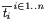
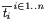

Ott: Tool Support for
Semantics |
Ott is a tool for writing definitions of programming languages and calculi. It takes as input a definition of a language syntax and semantics, in a concise and readable ASCII notation that is close to what one would write in informal mathematics. It generates output:
Additionally, it can be run as a filter, taking a LaTeX/Coq/Isabelle/HOL/Lem/OCaml source file with embedded (symbolic) terms of the defined language, parsing them and replacing them by typeset terms.
This document is a user guide for the tool. The papers
give an overview of the project, including discussion of motivation, design decisions, and related work, and one should look at that together with this manual. The project web page
http://www.cl.cam.ac.uk/users/pes20/ott/
links to the github source repository, with a BSD-style licence. It also has a range of examples, including untyped and simply typed CBV lambda calculus, ML polymorphism, various first-order systems from Pierce’s TAPL [], the POPLmark F<: language [], a module system by Leroy [, §4] (extended with a term language and an operational semantics), the LJ Java fragment and LJAM Java module system [], and a substantial fragment of OCaml.
Our main goal is to support work on large programming language definitions, where the scale makes it hard to keep a definition internally consistent, and hard to keep a tight correspondence between a definition and implementations. We also wish to ease rapid prototyping work with smaller calculi, and to make it easier to exchange definitions and definition fragments between groups. Most simply, the tool can be used to aid completely informal LaTeX mathematics. Here it permits the definition, and terms within proofs and exposition, to be written in a clear, editable, ASCII notation, without LaTeX noise. It generates good-quality typeset output. By parsing (and so sort-checking) this input, it quickly catches a range of simple errors, e.g. inconsistent use of judgement forms or metavariable naming conventions. That same input, extended with some additional data, can be used to generate formal definitions for Coq, HOL, Isabelle, and Lem. It should thereby enable a smooth transition between use of informal and formal mathematics. Further, the tool can automatically generate definitions of functions for free variables, single and multiple substitutions, subgrammar checks (e.g. for value subgrammars), and binding auxiliary functions. Ott supports a ‘fully concrete’ representation, sufficient for many examples but not dealing with general alpha equivalence. An experimental Coq backend generates definitions in locally-nameless style for a subset of the Ott metalanguage. The OCaml backend generates type definitions that may be useful for developing a complete implementation of the language, together with the functions listed above. It does not generate anything for inductively defined relations (the various proof-assistant code extraction facilities can sometimes be used for that). Our focus here is on the problem of writing and editing language definitions, not (directly) on aiding mechanized proof of metatheory. If one is involved in hard proofs about a relatively stable small calculus then it will aid only a small part of the work (and one might choose instead to work just within a single proof assistant), but for larger languages the definition is a more substantial problem — so much so that only a handful of full-scale languages have been given complete definitions. We aim to make this more commonplace, less of a heroic task.
Ott is a tool for writing definitions of programming languages and calculi. It takes as input a definition of a language syntax and semantics, in a concise and readable ASCII notation that is close to what one would write in informal mathematics. With appropriate annotations, it can then generate output:
Additionally, it can be run as a filter, taking a LaTeX/Coq/Isabelle/HOL/Lem/OCaml source file with embedded (symbolic) terms of the defined language, parsing them and replacing them by typeset terms.
Most simply, Ott can be used to aid informal LaTeX mathematics. Here it permits the definition, and terms within proofs and exposition, to be written in a clear, editable, ASCII notation, without LaTeX noise. It generates good-quality typeset output. By parsing (and so sort-checking) this input, it quickly catches a range of simple errors, e.g. inconsistent use of judgement forms or metavariable naming conventions.
That same input can be used to generate formal definitions, for Coq, HOL, Isabelle, and Lem. It should thereby enable a smooth transition between use of informal and formal mathematics. Additionally, the tool can automatically generate definitions of functions for free variables, single and multiple substitutions, subgrammar checks (e.g. for value subgrammars), and binding auxiliary functions. At present only a fully concrete representation of binding, without quotienting by alpha equivalence, is fully supported. An experimental backend generates a locally-nameless representation of terms for a subset of the Ott metalanguage: details can be found at http://moscova.inria.fr/~zappa/projects/ln_ott.
The distribution includes several examples, in varying levels of completeness: untyped and simply typed lambda-calculus, a calculus with ML polymorphism, the POPLmark Fsub with and without records, an ML module system taken from (Leroy, JFP 1996) and equipped with an operational semantics, and LJ, a lightweight Java fragment. More substantially, Ott has been used for work on iJAM and LJAM, Java Module Systems, by Rok Strnisa, and semantics for OCaml light, by Scott Owens.
As of 2020, Ott remains in continuous use.
Ott has been principally developed by Peter Sewell, Francesco Zappa Nardelli, and Scott Owens, with contributions from many others including Joey Eremondi, Hannes Mehnert, Karl Palmskog, Matthew Parkinson, Thibaut Perami, Gilles Peskine, Alastair Reid, Tom Ridge, Susmit Sarkar, Rok Strnisa, Viktor Vafeiadis.
Ott is available as an opam package and a github repo.
First, ensure you have opam (the OCaml package manager) installed, version 2.0 or greater (opam 1 versions of ott are no longer supported). You can use your system’s package manager e.g. sudo apt-get install opam (e.g. on Ubuntu 20.04) or follow the instructions from the opam website. On older Ubuntu versions you will not be able to use their package manager’s opam 1 version, and will need to install opam 2 following the instructions on the opam website.
Then opam install ott will install the latest Ott version. The Emacs mode will be in $(opam config var prefix)/share/emacs/site-lisp, and documentation in $(opam config var prefix)/doc/ott.
If you want to use Ott with the Coq proof assistant, to install the Ott auxiliary files for Coq, first activate the coq-released OPAM repository:
opam repo add coq-released https://coq.inria.fr/opam/released
and then run opam install coq-ott.
In the checkout directory, run opam pin add ott ..
To rebuild and reinstall after local changes, run opam upgrade --working-dir ott (or opam upgrade -w ott).
Ott depends on OCaml version 4.07.0 or later and the ocamlgraph package. It builds with (at least) OCaml 4.07.0 and 4.14.0, and ocamlgraph 1.8.8.
The command make (make world) builds the ott binary in the bin/ subdirectory.
This will compile Ott using ocamlopt. To force it to compile with ocamlc (which may give significantly slower execution of Ott), do make world.byt.
To build the Ott auxiliary files for Coq, go to the coq/ subdirectory and run make. To install the resulting files in Coq’s user-contrib, run make install.
Ott runs as a command-line tool. Executing ott shows the usage and options. To run Ott on the test file tests/test10.ott, generating LaTeX in test10.tex and Coq in test10.v, type:
ott -i tests/test10.ott -o test10.tex -o test10.v
Isabelle, HOL, and Lem can be generated with options -o test10.thy, -o test10Script.sml, and -o test10.lem, respectively.
The Makefile has various sample targets, make tests/test10.out, make test7, etc. Typically they generate:
filename description out.tex LaTeX source for a definition out.ps the postscript built from that out.v Coq source outScript.sml HOL source out.thy Isabelle source
from files test10.ott, test8.ott, etc., in tests/.
The file emacs/ott-mode.el defines a very simple Emacs mode for syntax highlighting of Ott source files. It can be used by, for example, adding the following to your .emacs file, replacing PATH by a path to your Ott Emacs directory.
(setq load-path (cons (expand-file-name "PATH") load-path)) (require 'ott-mode)
For installations using OPAM on *nix systems, it is sufficient to use the following code, which will call opam config var prefix at load-time.
(setq opam-share (substring (shell-command-to-string "opam config var share") 0 -1)) (add-to-list 'load-path (concat opam-share "/emacs/site-lisp")) (require 'ott-mode)
There is a plugin for VSCode, which features syntax highlighting and inline error reporting.
directory description aux/ auxiliary code (y2l) used to build the user guide bin/ the Ott binary built_doc/ the user guide, in html, pdf, and ps coq/ auxiliary files for Coq doc/ the user guide sources emacs/ an Ott Emacs mode examples/ some larger example Ott files tex/ auxiliary files for LaTeX hol/ auxiliary files for HOL menhir/ auxiliary files for menhir ocamlgraph-1.7.tar.gz a copy of the ocamlgraph library regression/ regression-test machinery tests/ various small example Ott files src/ the (OCaml) Ott sources Makefile a Makefile for the examples LICENCE the BSD-style licence terms README.md this file (Section 2 of the user guide) revisionhistory.txt the revision history
The following LaTeX, Coq, HOL, and Isabelle files, except the proof scripts, are all automatically generated from the Ott sources.
System
Rules
Ott sources
Latex
Typeset
Dot
Coq
HOL
Isabelle
Defn
Proof
Defn
Proof
Defn
Proof
Untyped CBV lambda
3
test10.ott
test10.tex
(ps)
test10.v
test10Script.sml
test10.thy
Simply typed CBV lambda
6
test10st.ott
test10st.tex
(ps)
test10st.v
test10st_metatheory.v
test10stScript.sml
test10st_metatheoryScript.sml
test10st.thy
test10st_metatheory.thy
ML polymorphism
22
test8.ott
test8.tex
(ps)
test8.v
test8Script.sml
test8.thy
TAPL roughly-full-simple
63
(sources)
(ps)
(Coq (including records))
(HOL)
(script)
(Isabelle)
(script)
POPLmark Fsub (*)
48
(sources)
(latex)
(pdf) (ps)
Leroy JFP96 module system (*)
67
leroy-jfp96.ott
(latex)
(ps)
(HOL)
LJ: Lightweight Java
85
(sources)
(pdf)
(Isabelle)
(zip)
LJAM: Java Module System
163
(sources)
(pdf)
(Isabelle)
(zip)
OCaml light
310
(sources)
(ps)
(ps)
(Coq)
(HOL)
(scripts)
(Isabelle)
(*) These systems would need explicit alpha conversion in the rules to capture the intended semantics using the fully concrete representation.
The ocamlgraph library is distributed under the LGPL (from http://www.lri.fr/~filliatr/ftp/ocamlgraph/); we include a snapshot for convenience. For its authorship and copyright information see the files therein.
All other files are distributed under the BSD-style licence in LICENCE.
Fig. 1 shows an Ott source file for an untyped call-by-value (CBV) lambda calculus. This section explains the basic features that appear there, while in the following sections we show what must be added to generate typeset output, proof assistant definitions, and other things.
% minimal metavar termvar, x ::= grammar t :: ’t_’ ::= | x :: :: Var | \ x . t :: :: Lam | t t’ :: :: App | ( t ) :: S:: Paren | { t / x } t’ :: M:: Tsub v :: ’v_’ ::= | \ x . t :: :: Lam subrules v <:: t defns Jop :: ” ::= defn t1 --> t2 :: ::reduce::” by -------------------------- :: ax_app (\x.t12) v2 --> {v2/x}t12 t1 --> t1’ -------------- :: ctx_app_fun t1 t --> t1’ t t1 --> t1’ -------------- :: ctx_app_arg v t1 --> v t1’
The figure is colourised, with Ott keywords like this and Ott symbols such as | and ::. Other user-specific input appears like this. Any text between % and the next newline is discarded as a comment.
At the top of the figure, the metavar declaration introduces a sort of metavariables termvar (with synonym x), for term variables. The following grammar introduces two grammar rules, one for terms, with nonterminal root t, and one for values v. This specifies the concrete syntax of object-language terms, the abstract syntax representations for proof-assistant mathematics, and the syntax of symbolic terms to be used in semantic rules.
Each rule has a rule name prefix (e.g. ’t_’) and then a list of productions. Each production, e.g.
| \ x . t :: :: Lam
specifies a syntactic form as a list of elements, here ‘\’,
‘x’, ‘.’, and ‘t’, each of which is either a
metavariable (the ‘x’), a nonterminal (the ‘t’), or a
terminal
(\ . ( ) { } / -->).
Within productions all elements must be whitespace-separated, so that
the tool can deduce which are terminals. In the symbolic terms in
the semantic rules below, however, whitespace is required only where necessary.
A few terminals have to be quoted (with '') if they appear in a grammar, e.g. to
use | as an object-language token, as they are part of the Ott syntax, but they
do not have to be quoted at usage points.
(If one accidentally omits inter-token whitespace in the grammar, the
output of Ott can be surprising. This is best diagnosed by looking at
the colourised ASCII or LaTeX output from Ott.)
Metavariables and nonterminals can be formed from the specified
metavariable and nonterminal roots by appending a suffix, e.g. the
nonterminal t' in the App and Tsub productions.
Between the ::’s is an optional meta flag M or S. Non-meta
productions give rise to clauses of datatype definitions in the
Isabelle/Coq/HOL output, whereas meta productions do not. Later, we
will see how the user can specify how meta syntax should be translated
away when generating proof assistant output. The two flags M
and S are identical except that productions with the latter are
admitted when parsing example concrete terms; the S tag is thus
appropriate for lightweight syntactic sugar, such as productions for
parentheses. One can also use another flag, e.g. X, along with the command-line option -tex_suppress_category, to suppress
productions in the generated LaTeX.
Each production has a production name (e.g. t_Lam), composed of
the rule name prefix (here t_) and the production name kernel
that follows the ::’s (here Lam). The production name is
used as a constructor name in the generated Isabelle/Coq/HOL.
The tool supports arbitrary context-free grammars, extended with special constructs for list forms (c.f. §12).
Following the grammar in this example is a subrule declaration
subrules v <:: t
declaring that the v grammar rule (of values) is a
subgrammar of the t rule (of terms). The tool checks that
there is in fact a subgrammar relationship, i.e. that for each
production of the lower rule there exists a production of the higher
rule with corresponding elements (up to the subrule relation).
The subrule declaration means that, in the semantic rules below, we
will be able to use v’s in places where the grammar specifies t’s.
In the generated Isabelle/Coq/HOL for this example only one free
datatype will be generated, for the t rule, while for the v
rule we generate an is_v predicate over the t type. Usages of
v nonterminals in the semantic rules will have instances of this
predicate automatically inserted.
Finally, we give a collection of definitions of inductive relations.
In this example there is just one family of definitions (of
operational judgements), introduced by the defns Jop; it contains just one
definition of a relation, called reduce.
In general there may be many defns blocks, each of which introduces a
mutually recursive collection of defns.
The relation definition
defn ...
also includes a grammar production specifying how elements of the
relation can be written and typeset, here
t1 --> t2
As in the main grammar, the tokens of this syntax definition in the header must be space-separated, but usages of the syntax generally need not be. Syntax rules for each family of judgements, and for their union, are implicitly generated. The relation definition is given by a sequence of inference rules, each with a horizontal line separating a number of premises from a conclusion, for example as below.
t1 --> t1’
-------------- :: ctx_app_arg
v t1 --> v t1’
The conclusion must be a symbolic term of the form of the judgement being
defined.
In simple cases (as here) the premises can be symbolic terms of the
form of any of the defined judgements. More generally (see
§6) they can be symbolic terms of a user-defined
formula grammar, or in-line embedded prover code.
Each rule
has a name, composed of a definition family prefix
(here empty), a definition prefix (here also empty) and a kernel
(the ctx_app_arg).
The symbolic terms in semantic rules are parsed with a scannerless parser, built
using parser combinators over character-list inputs. The parser
searches for all parses of the input. If none are found, the ASCII
and TeX output are annotated no parses, with a copy of the
input with *** inserted at the point where the last token was
read. This is often at the point of the error (though if, for
example, a putative dot form is read but the two element lists cannot
be anti-unified, it will be after the point of the error).
If multiple parses are found, the TeX output is annotated
multiple parses and the different parses are output to the
console in detail during the Ott run.
If the option picky_multiple_parses is set to
true, multiple parses are always reported. If it set to
false, a symbolic term is considered ambiguous only if two
different parses compile to different strings (for a target).
The parser combinators use memoization and continuation-passing to
achieve reasonable performance on the small symbolic terms that are
typical in semantic rules. Their performance on large (whole-program
size) examples is untested.
To resolve ambiguity one can add metaproductions for parentheses (as
in Fig. 1), or
production-name annotations in particular symbolic terms,
e.g. the :t_tsub: in the AppAbs rule of the POPLmark
example,
test7.ott. There is currently no support for precedence
or associativity.
This file is included in the distribution as tests/test10.0.ott. It can be processed by executing
bin/ott -i tests/test10.0.ott
from the main directory. This simply reads in the file, checking that it is well-formed. Adding options:
bin/ott -show_sort true -show_defns true -i tests/test10.0.ott
it echos a colourised version to the screen, with metavariables in red, nonterminals in yellow, terminals in green, and object variables in white. The colourisation uses vt220 control codes; if they do not work on your screen add -colour false to the middle of the command line. To suppress the echo of the definition, add -show_sort false and -show_defns false.
In addition to the metavar declarations above, the user can declare any number of distinguished index metavariables, e.g. by:
indexvar index, i, j, n, m ::= {{ isa num }} {{ coq nat }} {{ hol num }}
Given such a declaration, index, i, j, n
and m can be used in suffixes, e.g. in the production
| ( t1 , .... , tn ) :: :: Tuple
There is a fixed ad-hoc language of suffixes, including numbers, primes, and index variables (see §23). Index metavariables cannot themselves be suffixed.
The example from the previous section can already be used to generate LaTeX, for example by executing
bin/ott -i tests/test10.0.ott -o out.tex
to produce a LaTeX file out.tex. One often needs to
fine-tune the default typesetting, as illustrated in
Figure 2 (the Ott source) and Figure 3
(the resulting LaTeX).
(The latter was built using the additional option -tex_show_meta false, to
suppress display of the metaproductions.)
% minimal + latex + comments metavar termvar, x ::= {{ tex \mathit{[[termvar]]} }} grammar t :: ’t_’ ::= {{ com term }} | x :: :: Var {{ com variable}} | \ x . t :: :: Lam {{ com lambda }} | t t’ :: :: App {{ com app }} | ( t ) :: S:: Paren | { t / x } t’ :: M:: Tsub v :: ’v_’ ::= {{ com value }} | \ x . t :: :: Lam {{ com lambda }} terminals :: ’terminals_’ ::= | \ :: :: lambda {{ tex \lambda }} | --> :: :: red {{ tex \longrightarrow }} subrules v <:: t defns Jop :: ” ::= defn t1 --> t2 :: ::reduce::” {{ com $[[t1]]$ reduces to $[[t2]]$}} by -------------------------- :: ax_app (\x.t12) v2 --> {v2/x}t12 t1 --> t1’ -------------- :: ctx_app_fun t1 t --> t1’ t t1 --> t1’ -------------- :: ctx_app_arg v t1 --> v t1’
The source file has three additions to the previous file. Firstly, the metavar declaration is annotated with a specification of how metavariables should be translated to LaTeX:
metavar termvar, x ::= {{ tex \mathit{[[termvar]]} }}
Inside the {{ tex … }} is some LaTeX code \mathit{$[[termvar]]$} giving the translation of a termvar or x. Here they are typeset in math italic (which in fact is also the default). Within the translation, the metavariable itself can be mentioned inside double square brackets [[ … ]].
Secondly, there is a grammar for a distinguished nonterminal root terminals, with a {{ tex … }} translation for each, overriding the default typesetting of some terminals. Note that the other terminals (. ( ) { } /) are still given their default typesetting.
terminals :: ’terminals_’ ::= | \ :: :: lambda {{ tex \lambda }} | --> :: :: red {{ tex \longrightarrow }}
Thirdly, the file has com comments, including the {{ com term }} attached to a grammar rule, the {{ com variable}} attached to a production, and the {{ com [[t1]] reduces to [[t2]]}} attached to a semantic relation. These appear in the LaTeX output as shown in Figure 3.
One can also specify tex translations for productions, overriding the default LaTeX typesetting, e.g. as in this example of a type abstraction production.
| X <: T . t :: :: TLam {{ tex \Lambda [[X]] [[<:]] [[T]]. \, [[t]] }}
These homomorphisms, or homs1, can refer to the metavariables and nonterminals that occur in the production, e.g. the [[X]], [[T]], and [[t]] in the tex hom above, interleaved with arbitrary strings and with typeset elements of the terminals grammar, e.g. the [[<:]].
Homomorphisms are applied recursively down the structure of symbolic terms. For example, an F<: term
(\X<:T11.t12) [T2]
would be LaTeX-pretty-printed, using the tex clause above, as
( \, \Lambda \mathit{X} <: \mathit{T_{\mathrm{11}}} . \, \mathit{t_{\mathrm{12}}} \, )
\, \, [ \, \mathit{T_{\mathrm{2}}} \, ]
which is typeset as below.
|
|
Note the X, T11 and t12 of the symbolic term are
used to instantiate the formal parameters X, T and
t of the homomorphism definition clause.
If the t itself had compound term structure, e.g. as below
(\X<:T. \X'<:T'.x)
the homomorphism would be applied recursively, producing
( \, \Lambda \mathit{X} <: \mathit{T} . \, \Lambda \mathit{X'} <: \mathit{T'}
. \, \mathit{x} \, \, )
typeset as follows.
Where there is no user-supplied homomorphism clause the LaTeX
pretty-printing defaults to a sequence of the individual items
separated by thin spaces (\,),
with reasonable default fonts and making use of the terminals grammar where appropriate.
Grammar rules can include a tex hom specifying how all the nonterminal roots should be typeset, e.g.
type, t, s :: Typ_ ::= {{ tex \mathsf{[[type]]} }} | unit :: :: unit | type * type’ :: :: pair | type -> type’ :: :: fun
Alternatively, the individual nonterminal roots can have tex homs specifying how they should be typeset:
G {{ tex \Gamma }} , D {{ tex \Delta }} :: ’G_’ ::= | empty :: :: empty | G , x : T :: :: term
permitting the user to write G', D12 etc. in symbolic
terms, to be typeset as
etc.
The generated LaTeX code can be used in two main ways.
By default, Ott generates a stand-alone LaTeX file,
with a standard wrapper (including a \documentclass, various
macro definitions, and a main body),
that gives the complete system definition.
The default header can be overridden by writing
embed {{ tex-wrap-pre ... }} and the default footer by
writing embed {{ tex-wrap-post ... }} . Alternatively, the
program option -tex_wrap false with the -tex_wrap false
command-line argument, one can generate a file that can be included in
other LaTeX files, that just defines macros to typeset various
parts of the system (-tex_wrap false overrides any
tex-wrap-pre/tex-wrap-post embeds).
The generated LaTeX output is factored into individual LaTeX
commands: for the metavariable declarations, each rule of the syntax
definition, the collected syntax (\ottgrammar), each rule of the inductive relation
definitions, the collected rules for each relation, the collected
rules for each defns block, the union of those
(\ottdefns) and the whole (\ottall).
This makes it possible to quote individual parts of the definition,
possibly out-of-order, in a paper or technical report.
If one needs to include more than one system in a single LaTeX
document, the ott prefix can be replaced using the
-tex_name_prefix command-line argument.
The generated LaTeX is factored through some common style macros,
e.g. to typeset a comment, a production, and a grammar. If necessary
these can be redefined in an embed block (see Section 8.1).
For example, the file tests/squishtex.ott
embed {{ tex-preamble \renewcommand{\[[TEX_NAME_PREFIX]]grammartabular}[1] {\begin{minipage}{\columnwidth}\begin{tabular}{ll}#1\end{tabular}\end{minipage} } \renewcommand{\[[TEX_NAME_PREFIX]]rulehead}[3] {$#1$ $#2$ & $#3$} \renewcommand{\[[TEX_NAME_PREFIX]]prodline}[6] { \quad $#1$ \ $#2$ & \quad $#3 #4$ $#5$ $#6$} \renewcommand{\[[TEX_NAME_PREFIX]]interrule} {\\[2.0mm]} }}
defines a more compact style for grammars. Note that the [[TEX_NAME_PREFIX]] is replaced by whatever prefix is in force, so such style files can be reused in different contexts.
A more sophisticated LaTeX package ottlayout.sty, providing fine control of how
inference rules and grammars should be typeset, is contained in the
tex directory of the distribution. It is described in the
manual therein.
To generate proof assistant definitions, for Coq, Isabelle, and HOL, the minimal Ott source file of Section 3/Figure 1 must be extended with a modest amount of additional data, as shown in Figure 4. Executing
bin/ott -i tests/test10.4.ott -o out.v -o out.thy -o outScript.sml
generates Coq out.v, Isabelle out.thy, and HOL outScript.sml, shown in Figures 5, 6, and 7. The additional data can be combined with the annotations for LaTeX of the previous section, but those are omitted here.
% minimal + binding + subst + coq/hol/isa metavar termvar, x ::= {{ isa string}} {{ coq nat}} {{ hol string}} {{ coq-equality }} grammar t :: ’t_’ ::= | x :: :: Var | \ x . t :: :: Lam (+ bind x in t +) | t t’ :: :: App | ( t ) :: S:: Paren {{ icho [[t]] }} | { t / x } t’ :: M:: Tsub {{ icho (tsubst_t [[t]] [[x]] [[t’]])}} v :: ’v_’ ::= | \ x . t :: :: Lam subrules v <:: t substitutions single t x :: tsubst defns Jop :: ” ::= defn t1 --> t2 :: ::reduce::” by -------------------------- :: ax_app (\x.t12) v2 --> {v2/x}t12 t1 --> t1’ -------------- :: ctx_app_fun t1 t --> t1’ t t1 --> t1’ -------------- :: ctx_app_arg v t1 --> v t1’
We add four things. First, we specify proof assistant types to represent object-language variables — in this example, choosing the string type of Isabelle and HOL, and the nat type for Coq:
metavar termvar, x ::= {{ isa string}} {{ coq nat}} {{ hol string}} {{ coq-equality }}
For Coq output, one can specify {{ coq-equality proof-script }}
to build a decidable equality over the Coq representation type using
the proof proof-script. If the script is omitted, as in this
example, it defaults
to
Proof. decide equality; auto with ott_coq_equality arith. Defined.
where the ott_coq_equality database contains the decidable
equalities of the representation types defined in the source. It is
possible to suppress type generation for specific metavariables or nonterminals, by adding the
declaration {{ phantom }}. This is useful in some cases, for
instance to avoid duplicate definitions of types already defined in an
imported library. Any type homs are taken into account when
the metavariable or nonterminal root is output as a type.
Second, we specify what the binding is in the object language, with the (+ bind x in t +) annotation on the Lam production:
| \ x . t :: :: Lam (+ bind x in t +)
Section 9 describes the full language of binding specifications.
Third, we add a block
substitutions single t x :: tsubst
to cause Ott to generate Coq/Isabelle/HOL definitions of a substitution
function, with name root tsubst, replacing metavariables x by terms t. This is for single
substitutions; multiple substitution functions (taking lists of
substitutand/substitutee pairs) can also be generated with the keyword
multiple.
Substitution functions are generated for all rules of the grammar for
which they might be required — here, just over t, with a
function named tsubst_t.
Finally, we specify translations for the metaproductions:
| ( t ) :: S:: Paren {{ icho [[t]] }} | { t / x } t’ :: M:: Tsub {{ icho (tsubst_t [[t]] [[x]] [[t’]])}}
These specify that (t) should be translated into just the translation of t, whereas {t/x}t’ should be translated into the proof-assistant application of tsubst_t to the translations of t, x, and t’. The (admittedly terse) icho specifies that these translations should be done uniformly for Isabelle, Coq, HOL, and OCaml output. One can also specify just one of these, writing {{ coq …}}, {{ hol …}}, {{ isa …}}, or {{ ocaml …}}, or include several, with different translations for each. There are also abbreviated forms ich, ic, ch, and ih. The body of a proof assistant hom should normally include outer parentheses, as in the Tsub hom above, so that it is parsed correctly by the proof assistant in all contexts.
(* generated by Ott 0.33 from: ../tests/test10.ott ../tests/non_super_tabular.ott *) Require Import Arith. Require Import Bool. Require Import List. Require Import Ott.ott_list_core. Definition var : Set := nat. (*r term variable *) Lemma eq_var: forall (x y : var), {x = y} + {x <> y}. Proof. decide equality; auto with ott_coq_equality arith. Defined. Hint Resolve eq_var : ott_coq_equality. Inductive term : Set := (*r term *) | t_var (x:var) (*r variable *) | t_lam (x:var) (t:term) (*r lambda *) | t_app (t:term) (t':term) (*r app *). (** subrules *) Definition is_val_of_term (t5:term) : bool := match t5 with | (t_var x) => false | (t_lam x t) => (true) | (t_app t t') => false end. (** library functions *) Fixpoint list_mem A (eq:forall a b:A,{a=b}+{a<>b}) (x:A) (l:list A) {struct l} : bool := match l with | nil => false | cons h t => if eq h x then true else list_mem A eq x t end. Arguments list_mem [A] _ _ _. (** substitutions *) Fixpoint tsubst_term (t5:term) (x5:var) (t_6:term) {struct t_6} : term := match t_6 with | (t_var x) => (if eq_var x x5 then t5 else (t_var x)) | (t_lam x t) => t_lam x (if list_mem eq_var x5 (cons x nil) then t else (tsubst_term t5 x5 t)) | (t_app t t') => t_app (tsubst_term t5 x5 t) (tsubst_term t5 x5 t') end. (** definitions *) (* defns Jop *) Inductive reduce : term -> term -> Prop := (* defn reduce *) | ax_app : forall (x:var) (t1 v2:term), Is_true (is_val_of_term v2) -> reduce (t_app (t_lam x t1) v2) (tsubst_term v2 x t1 ) | ctx_app_fun : forall (t1 t t1':term), reduce t1 t1' -> reduce (t_app t1 t) (t_app t1' t) | ctx_app_arg : forall (v t1 t1':term), Is_true (is_val_of_term v) -> reduce t1 t1' -> reduce (t_app v t1) (t_app v t1').
(* generated by Ott 0.33 from: ../tests/test10.ott ../tests/non_super_tabular.ott *) theory test10 imports Main begin type_synonym "var" = "string" \<comment> \<open>term variable\<close> datatype "term" = \<comment> \<open>term\<close> t_var "var" \<comment> \<open>variable\<close> | t_lam "var" "term" \<comment> \<open>lambda\<close> | t_app "term" "term" \<comment> \<open>app\<close> (** subrules *) primrec is_val_of_term :: "term => bool" where "is_val_of_term (t_var x) = (False)" | "is_val_of_term (t_lam x t) = ((True))" | "is_val_of_term (t_app t t') = (False)" (** substitutions *) primrec tsubst_term :: "term => var => term => term" where "tsubst_term t5 x5 (t_var x) = ((if x=x5 then t5 else (t_var x)))" | "tsubst_term t5 x5 (t_lam x t) = (t_lam x (if x5 : set [x] then t else (tsubst_term t5 x5 t)))" | "tsubst_term t5 x5 (t_app t t') = (t_app (tsubst_term t5 x5 t) (tsubst_term t5 x5 t'))" (** definitions *) (* defns Jop *) inductive reduce :: "term \<Rightarrow> term \<Rightarrow> bool" where (* defn reduce *) ax_appI: "\<lbrakk>is_val_of_term v2\<rbrakk> \<Longrightarrow> reduce ((t_app (t_lam x t1) v2)) ( (tsubst_term v2 x t1 ) )" | ctx_app_funI: "\<lbrakk>reduce (t1) (t1')\<rbrakk> \<Longrightarrow> reduce ((t_app t1 t)) ((t_app t1' t))" | ctx_app_argI: "\<lbrakk>is_val_of_term v ; reduce (t1) (t1')\<rbrakk> \<Longrightarrow> reduce ((t_app v t1)) ((t_app v t1'))" end
(* generated by Ott 0.33 from: ../tests/test10.ott ../tests/non_super_tabular.ott *) (* to compile: Holmake test10Theory.uo *) (* for interactive use: app load ["pred_setTheory","finite_mapTheory","stringTheory","containerTheory","ottLib"]; *) open HolKernel boolLib Parse bossLib ottLib; infix THEN THENC |-> ## ; local open arithmeticTheory stringTheory containerTheory pred_setTheory listTheory finite_mapTheory in end; val _ = new_theory "test10"; val _ = type_abbrev("var", ``:string``); (* term variable *) val _ = Hol_datatype ` term = (* term *) t_var of var (* variable *) | t_lam of var => term (* lambda *) | t_app of term => term (* app *) `; (** subrules *) val _ = ottDefine "is_val_of_term" ` ( is_val_of_term (t_var x) = F) /\ ( is_val_of_term (t_lam x t) = (T)) /\ ( is_val_of_term (t_app t t') = F) `; (** substitutions *) val _ = ottDefine "tsubst_term" ` ( tsubst_term t5 x5 (t_var x) = (if x=x5 then t5 else (t_var x))) /\ ( tsubst_term t5 x5 (t_lam x t) = t_lam x (if MEM x5 [x] then t else (tsubst_term t5 x5 t))) /\ ( tsubst_term t5 x5 (t_app t t') = t_app (tsubst_term t5 x5 t) (tsubst_term t5 x5 t')) `; (** definitions *) (* defns Jop *) val (Jop_rules, Jop_ind, Jop_cases) = Hol_reln` (* defn reduce *) ( (* ax_app *) ! (x:var) (t1:term) (v2:term) . (clause_name "ax_app") /\ ((is_val_of_term v2)) ==> ( ( reduce (t_app (t_lam x t1) v2) (tsubst_term v2 x t1 ) ))) /\ ( (* ctx_app_fun *) ! (t1:term) (t:term) (t1':term) . (clause_name "ctx_app_fun") /\ (( ( reduce t1 t1' ))) ==> ( ( reduce (t_app t1 t) (t_app t1' t) ))) /\ ( (* ctx_app_arg *) ! (v:term) (t1:term) (t1':term) . (clause_name "ctx_app_arg") /\ ((is_val_of_term v) /\ ( ( reduce t1 t1' ))) ==> ( ( reduce (t_app v t1) (t_app v t1') ))) `; val _ = export_theory ();
The normal behaviour is to generate a free proof assistant type for each (non-subrule, non-phantom) grammar rule. For example, the Coq compilation for t here generates a free type with three constructors:
Inductive term : Set := | t_var (x:var) | t_lam (x:var) (t:term) | t_app (t:term) (t':term).
(note that the metaproductions do not give rise to constructors).
Remark: prior to version 0.20.2, the free type generated for Coq was
Inductive term : Set := | t_var : var -> term | t_lam : var -> term -> term | t_app : term -> term -> term.
but we found that trying to preserve the names specified by the user is helpful later, when doing proofs. Whenever a clash is detected, or for list forms, the wildcard _ is used. The old behaviour can be obtained via the top-level option -coq_names_in_rules false.
By default the order of the arguments to those constructors follows
the order in which they appear in the production. That can be
overridden with an order hom. For example, if for some
reason (perhaps compatibility with other Coq code) one wished the
arguments to t_Lam to be reversed:
| t_Lam : t -> termvar -> t
one could add an order hom as below.
| \ x . t :: :: Lam {{ order [[t]] [[x]] }}
Instead of using the generated free type, one can specify an arbitrary proof assistant representation type, annotating the grammar rule with a coq, isa, hol, or ocaml hom — for example, in the following grammar for substitutions.
s {{ tex \sigma }} :: ’S_’ ::= {{ com multiple subst }} {{ isa (termvar*t) list }} | [ x |-> t ] :: :: singleton {{ isa [ ([[x]],[[t]]) ] }} | s1 , .. , sn :: :: list {{ isa List.concat [[s1 .. sn]] }}
Here the {{ isa (termvar*t) list }} hom specifies that in
Isabelle output this type be represented as an Isabelle
(termvar*t) list instead of the default free inductive type;
all the productions are metaproductions (tagged M); and isa homs for each production specify how they should be translated into that Isabelle type.
This feature must be used with care, as any Ott-generated functions, e.g. substitution functions, cannot recurse through such user-defined types.
Grammar rules (whether free or non-free) can also include a coq equality hom, instructing the Coq code generator to derive a decidable equality for the Coq representation type. For example, the ML polymorphism Ott source of test8.ott includes the following.
typvar :: TV_ ::= {{ coq-equality decide equality. apply eq_value_name_t. }} | ’ ident :: :: ident
The Coq/HOL/Isabelle/OCaml type name for a grammar rule, or for a metavariable declaration, is normally taken to be just its primary nonterminal root. Occasionally it is useful to work around a clash between a metavar or nonterminal primary root and a proof assistant symbol, e.g. T in HOL or value in Isabelle. For this, one can add a coq, hol, isa, or ocaml hom to the primary nonterminal root. In the example below, the user can write T, T’ etc. in their Ott source, but the generated HOL type is Typ.
T {{ hol Typ }}, S, U :: ’T_’ ::= {{ com type }} | T -> T’ :: :: Fun {{ com type of functions }}
The grammar rules within each grammar block of a syntax definition may depend on each other arbitrarily. When generating Isabelle/Coq/HOL/OCaml representation types, however, they are topologically sorted, to simplify the resulting induction principles.
The semantic relations are defined
with the proof-assistant inductive relations packages,
Inductive, Hol_reln, and inductive_set or inductive, respectively.
Each defns block gives rise to a potentially mutually
recursive definition of each defn inside it
(it seems clearer not to do a topological sort here).
Definition rules are expressed internally with symbolic terms.
We give a simplified grammar thereof in Fig. 17, omitting the
symbolic terms for list forms.
A symbolic term st for a nonterminal root is either an explicit nonterminal or a
node, the latter labelled with a production name and containing a list of
symterm_elements, which in turn are either symbolic terms,
metavariables, or variables.
Each definition rule
gives rise to an implicational clause, essentially
that the premises (Ott symbolic terms of the formula grammar)
imply the conclusion (an Ott symbolic term of whichever judgement is
being defined).
Symbolic terms are compiled in several different ways:
formula_dots production, c.f.§12) are
special-cased to proof-assistant conjunctions.
Further, for each nonterminal of a non-free grammar rule,
e.g. a usage of v' where v<::t, an additional premise
invoking the generated subrule predicate for the non-free rule is added, e.g. is_v v'.
For Coq and HOL, explicit quantifiers are introduced for all variables
mentioned in the rule.
For HOL, rules are tagged with their rule name (using clause_name).
At present the generated Isabelle/Coq/HOL uses fully concrete
representations of variables in terms, without any notion of alpha
equivalence, as one can see in Fig. 6:
see the t datatype of terms and the tsubst_t
substitution function there.
An experimental Coq backend generates definitions in locally-nameless style for a subset of the Ott metalanguage. This is work-in-progress, and it is extensively documented in http://moscova.inria.fr/~zappa/projects/ln_ott/.
We intend in future to generate other representations, and in some
circumstances homs can be used to implement other representations directly.
For a reasonably wide variety of
languages, however, one can capture the intended semantics of whole programs in
this idiom, subject only to the condition that standard library
identifiers are not shadowed within the program, as the operational
semantics does not involve reduction under binders — so any
substitutions are of terms which (except for standard library
identifiers) are closed. This includes the ML polymorphism example of
test8.ott. For languages which require a type
environment with internal dependencies, however, for example F<:, this is
no longer the case. The POPLmark F<: example given in test7.ott
has a type system which disallows all shadowing, a property that is
not preserved by reduction. However, a correct translation of F<: is generated by the Coq locally-nameless backend, and can be found in http://moscova.inria.fr/~zappa/projects/ln_ott/.
Further discussion of binding representations is in the Ott ICFP 2007 paper and in a working draft
Binding and Substitition. Susmit Sarkar, Peter Sewell, and Francesco Zappa Nardelli. August 2007.
available from the Ott web page.
The generated free variable and substitution functions in the Coq output
(e.g., in Figure 5) often rely on a few standard library functions:
list_mem, list_assoc, list_minus, list_minus2.
In order to avoid dependencies on external libraries for defining those
functions, by default Ott generates the definitions for any such functions it
uses. It is possible to turn off the generation of definitions for
these such functions by writing the following directive early on in the source file:
embed {{ coq-lib list_mem list_minus }}
This instructs Ott to avoid generating definition for list_mem and
list_minus, but to continue generating definitions for other functions
such as list_assoc and list_minus2.
Note about list_minus2:
Instead of using the function list_minus2, earlier versions of Ott
generated equivalent code based on list_filter, which was more
difficult to reason about. For backwards compatibility, however, we provide the
command-line option -coq_use_filter_fn for generating a definition using
the older code pattern.
We have attempted to ensure that the proof assistant definitions generated by Ott are well-formed and what the user would intend. This is not guaranteed, however, for several reasons: (1) There may be name clashes between Ott-generated identifiers and proof assistant built-in identifiers (or, in pathological cases, even among different Ott-generated identifiers). (2) In some cases we depend on automatic proof procedures, e.g. for HOL definitions. These work in our test cases, but it is hard to ensure that they will in all cases. More importantly, (3) the generation process is complex, so it is quite possible that there is either a bug in Ott or a mismatch between the user expectation and what the tool actually does. Ultimately one has to read the generated proof assistant definitions to check that they are as intended — but typically one would do this in any case, many times over, in the process of proving metatheoretic results, so we do not consider it a major issue.
Note added 2017-11-30: the following is out of date.
Ott builds code for
| Coq 8.3 | http://coq.inria.fr/ |
| HOL 4 (the current svn version) | http://hol.sourceforge.net/ |
| Isabelle/HOL (Isabelle 2011) | http://isabelle.in.tum.de/ |
Given proof assistant files in the top-level directory of the distribution, as produced at the start of this section (Coq out.v, Isabelle out.thy, and HOL outScript.sml), the various proof assistants can be invoked as follows.
First run
make
in the coq directory of the distribution, to build the auxiliary files.
These include a core file (ott_list_core) of definitions that
are used in Ott-generated output.
At present these are only required when Coq native lists are used.
There are also various lemmas (in
ott_list.v) which may be useful; they can be made available with
Require Import ott_list.
For batch mode run
coqc -I coq out.v
where coq is the path to the coq directory of the distribution.
The experimental locally-nameless backend requires the Metatheory library by Arthur Chargueraud, available from the project web page.
First run
Holmake
in the hol directory of the distribution, to build the auxiliary files.
For batch mode run
Holmake -I hol outTheory.uo
where hol is the path to the hol directory of the distribution.
For interactive mode, run
hol -I hol
inside an editor window (where the second hol is again the path
to the hol directory of the distribution), and in
another window view the outScript.sml file. First
paste in the app load command from a comment at the top of the
file, then paste in the remainder.
For batch mode:
echo 'ML_command {* (use_thy "Tmp"; OS.Process.exit OS.Process.success) handle e => (OS.Process.exit OS.Process.failure); *}' | /usr/local/Isabelle/bin/isabelle tty
Interactively, using Proof General:
isabelle emacs out.thy
In a semantic rule, for example
t1 --> t1’
-------------- :: ctx_app_arg
v t1 --> v t1’
the conclusion must be a symbolic term of the form of the judgement being defined, but in general the premises may be symbolic terms of a formula grammar or in-line embedded prover code. By default the formula grammar includes all the defined judgement forms: for the running example Ott will synthesise grammars as below.
The user can also define an explicit formula grammar, to let other forms (not just judgements) appear as rule premises. Below is a fragment of the formula grammar from the LJ example on the Ott web page.
formula :: formula_ ::= | judgement :: :: judgement | formula1 .. formulan :: :: dots | not formula :: M :: not {{ tex \neg [[formula]] }} {{ isa \<not> ([[formula]]) }} | ( formula ) :: M :: brackets {{ tex ([[formula]]\!) }} {{ isa [[formula]] }} | formula \/ formula’ :: M :: or {{ tex [[formula]] \vee [[formula’]] }} {{ isa [[formula]] \<or> [[formula’]] }} | formula /\ formula’ :: M :: and {{ tex [[formula]] \wedge [[formula’]] }} {{ isa [[formula]] \<and> [[formula’]] }} | x = x’ :: M :: xali {{ isa [[x]] = [[x’]] }} | X = X’ :: M :: Xali {{ isa [[X]] = [[X’]] }}
This example adds (to the judgement forms) syntax for parenthesised formulae, negation, and, or, and equality testing on two sorts. For each, tex and isa homs specify how they should be typeset and be translated into Isabelle.
If the user defines a formula grammar then (as here) the production name prefix must be formula_ and the name for the judgement production must be judgement.
It is possible to specify the names of premises of inductive predicates; these names are then used by the Coq backend, and are often useful in proofs. For instance, we can call RED the hypothesis in the rule below
t1 --> t1’ [[:RED]]
-------------- :: ctx_app_arg
v t1 --> v t1’
which will then generate the following Coq code:
| ctx_app_arg : forall (v t1 t1’:term)
(RED: reduce t1 t1’),
is_val_of_term v ->
reduce (t_app v t1) (t_app v t1’).
Names of rules cannot contain spaces or other non alpha-numerical characters, and must begin with a letter. The name annotation must at the rightmost place on the hypothesis line, and must be enclosed (without spaces) between the [[: and ]] parentheses.
Instead of adding a formula production, one can directly embed prover code as a premise, delimited as below by {{ and }}. Within that, text will be echoed directly to a prover (or given a default LATEX typesetting) except that symbolic terms enclosed within [[ and ]] will be processed as in an embed section.
{{ type_to_chunk ([[typeof e1]]) = Some [[c]] }} ----------------------------------------------------------- :: Assign1 e1=e2 . k |env --tau--> lval(e1) . [__=c e2] . k |env
The tool also synthesises a user_syntax grammar of all the user syntax, for example:
This is used for parsing top-level strings, for example when filtering embedded code (§8).
In semantic definitions, one typically never uses concrete variables, only metavariables that range over them. In examples, however, one may need either a mix of concrete variables and metavariables, or, for strictly concrete terms, to restrict to just the former (and also to prohibit symbolic nonterminals).
Figure 2 combines the LaTeX and proof assistant
annotations of Sections 3 and 4, adding a
{{ lex alphanum}}
hom
to the metavar declaration to specify the lexical form of
concrete variables of this sort.
At present a lex homomorphism must have body either
Alphanum (standing for [A-Z]([A-Z]|[a-z]|[0-9]|'|_)*),
alphanum (for ([A-Z]|[a-z])([A-Z]|[a-z]|[0-9]|'|_)*),
alphanum0 (for [a-z]([A-Z]|[a-z]|[0-9]|'|_)*), or
numeral (for [0-9][0-9]*); more general regular expressions are not supported.
An identifier that can be ambiguously lexed as either a concrete or
symbolic metavariable, e.g. x in the scope of the above
declaration, will be taken to be symbolic.
To restrict the parser to strictly concrete terms only, one can add a
:concrete: prefix, as shown in Figure 10.
One can also specify how concrete variables should be LaTeX’d or translated into a proof assistant, e.g. with homomorphisms {{ texvar \mathrm{[[termvar]]}} and {{ isavar ’’[[termvar]]’’}} (and similarly coqvar, holvar, and ocamlvar).
Figure 2 also specifies an OCaml representation type for variables, with the metavar hom {{ ocaml int}}. Executing
bin/ott -i tests/test10.ott -o test10.ml
produces the OCaml code shown in Figure 9, including OCaml types to represent the abstract syntax, and auxiliary functions for subrules and substitutions. This does not implement the semantic rules. In some cases the various proof assistant code extraction facilities can be used — see Section 21.
% all metavar termvar, x ::= {{ com term variable }} {{ isa string}} {{ coq nat}} {{ hol string}} {{ coq-equality }} {{ ocaml int}} {{ lex alphanum}} {{ tex \mathit{[[termvar]]} }} grammar t :: ’t_’ ::= {{ com term }} | x :: :: Var {{ com variable}} | \ x . t :: :: Lam (+ bind x in t +) {{ com lambda }} | t t’ :: :: App {{ com app }} | ( t ) :: S:: Paren {{ icho [[t]] }} | { t / x } t’ :: M:: Tsub {{ icho (tsubst_t [[t]] [[x]] [[t’]])}} v :: ’v_’ ::= {{ com value }} | \ x . t :: :: Lam {{ com lambda }} terminals :: ’terminals_’ ::= | \ :: :: lambda {{ tex \lambda }} | --> :: :: red {{ tex \longrightarrow }} subrules v <:: t substitutions single t x :: tsubst defns Jop :: ” ::= defn t1 --> t2 :: ::reduce::” {{ com $[[t1]]$ reduces to $[[t2]]$}} by -------------------------- :: ax_app (\x.t12) v2 --> {v2/x}t12 t1 --> t1’ -------------- :: ctx_app_fun t1 t --> t1’ t t1 --> t1’ -------------- :: ctx_app_arg v t1 --> v t1’
(* generated by Ott 0.33 from: ../tests/test10.ott ../tests/non_super_tabular.ott *) type var = int (* term variable *) type term = (* term *) T_var of var (* variable *) | T_lam of var * term (* lambda *) | T_app of term * term (* app *) (** subrules *) let is_val_of_term (t5:term) : bool = match t5 with | (T_var x) -> false | (T_lam (x,t)) -> (true) | (T_app (t,t')) -> false (** substitutions *) let rec tsubst_term (t5:term) (x5:var) (t_6:term) : term = match t_6 with | (T_var x) -> (if x=x5 then t5 else (T_var x)) | (T_lam (x,t)) -> T_lam (x,(if List.mem x5 ([x]) then t else (tsubst_term t5 x5 t))) | (T_app (t,t')) -> T_app ((tsubst_term t5 x5 t),(tsubst_term t5 x5 t')) (** definitions *)
It is possible to embed arbitrary code in
the Ott source using an embed block, which can contain
tex,
coq,
hol,
isa, or
ocaml homomorphisms, the
bodies of which will appear in the respective output.
The embed keyword should be on a line by itself). For
example,
test8.ott contains the following to
define Coq and HOL remove_duplicates functions.
embed {{ coq Fixpoint remove_duplicates (l:list typvar_t) : list typvar_t := match l with | nil => nil | cons h t => if (list_mem eq_typvar_t h t) then remove_duplicates t else cons h (remove_duplicates t) end. }} {{ hol val _ = Define ‘ (remove_duplicates [] = []) /\ (remove_duplicates (x::xs) = if (MEM x xs) then remove_duplicates xs else x::(remove_duplicates xs)) ‘; }}
Within the body of an embed homomorphism, any text between
[[ and ]] will be parsed as a symbolic term (of the
user_syntax grammar) and pretty printed, so one can use user
syntax within LaTeX or proof assistant code. An Isabelle example
is below, defining an Isabelle function to calculate the order of a
type with productions unit, t*t', and t->t'.
{{ isa consts order :: "type => nat" primrec "order [[unit]] = 0" "order [[t*t’]] = max (order [[t]]) (order [[t’]])" "order [[t->t’]] = max (1+order [[t]]) (order [[t’]])" }}
It is often useful to define a proof assistant function, in an embed section, together with a production of the formula grammar with a proof assistant hom that uses that function, thereby introducing syntax that lets the function be used in semantic rules.
Ott also permits embed blocks with tex-preamble, homs, whose contents appear in the generated LATEX preamble. Any definitions of LATEX commands must appear in such a tex-preamble section.
Similar processing can be carried out on separate files, using the
command-line options tex_filter, isa_filter, etc.
Each of these takes two arguments, a source filename and a destination
filename. In processing the source file,
any text between
[[ and ]] will be parsed as a symbolic term (of the
user_syntax grammar) and pretty printed in the appropriate
style. All other text is simply echoed.
Typical usage for LaTeX would be something like this (from the Makefile
used to produce this document):
test7.tex: ../src/ott ../tests/test7.ott ../tests/test7tt.mng
cd ../src; make tmp_test7_clean.ott
../src/ott \
-i ../src/tmp_test7_clean.ott \
-o test7.tex \
-tex_show_meta false \
-tex_wrap false \
-tex_name_prefix testSeven \
-tex_filter ../tests/test7tt.mng test7tt.tex
The -tex_wrap false turns off output of the default LaTeX
document preamble, so the generated file test7.tex just contains
LaTeX definitions.
The -tex_name_prefix testSeven sets a prefix for the generated
LaTeX commands
(so the LaTeX definitions from multiple Ott source files can be
included in a single LaTeX document).
The -tex_filter argument takes two
filenames, a source and a destination. It filters the source file,
(roughly) replacing any string found within [[ ]] by
the tex pretty-print of its parse. This parsing is done w.r.t. the generated nonterminal
user_syntax which is a union of all the user’s grammar.
At present munged strings are not automatically
put within $ $, and there is no analogue of the
<[ ]> of our previous munger.
The lexing
turns any sequence of [ (resp. of ]) of
length n+1 for n>2 into a literal sequence of length n.
Figures 10 and 11 show a source file (test7tt.mng) that uses terms of the F<: definition of test7.ott, and the result of filtering it.
Similar filtering can be performed on Coq, Isabelle, HOL, and OCaml files.
To filter files with respect to a relatively stable system definition, without having to re-process the Ott source files of that system definition each time, there are command-line options
-writesys <filename> Output system definition -readsys <filename> Input system definition
to first write the system definition (generated from some source files) to a file, and then to read one back in (instead of re-reading the Ott source files). The saved system definitions are in an internal format, produced using the OCaml marshaller, and contain OCaml closures. They therefore will not be compatible between different Ott versions. They may also be quite large.
We can TeX-typeset symbolic terms of the language, e.g. \[ [[ (\X<:Top. \x:X.x) [Top->Top] ]]\] and concrete terms \[ [[ :concrete: \Z1<:Top. \x:Z1.x ]]\] and similarly judgements etc, e.g. \[ [[G |- t : T ]] \] Here is an extract of the syntax: \testSevengrammartabular{\testSevent\testSevenafterlastrule} and a single semantic rule: \[\testSevendruletinXXTwo{}\] and a judgement definition: \testSevendefnSA One can also include a ‘defns’ collection of judgements, or the complete definition. % \section{Full Definition} % \testSevenmetavars\\[0pt] % \testSevengrammar\\[0pt] % \testSevendefnss % % \testSevenall
Our first example involved a production with a single binder:
specified by the source shown in Figure 4:
| \ x . t :: :: Lam (+ bind x in t +)
in which a single variable binds in a single subterm. Realistic programming languages often have much more complex binding structures, e.g. structured patterns, multiple mutually recursive let definitions, comprehensions, or-patterns, and dependent record patterns.
Ott has a flexible metalanguage for specifying binding structures, expressive enough to cover these. It comprises two forms of annotation on productions. The first, lets one specify that variables bind in nonterminals of the production, as in the Lam production above. Here is a metavariable set expression, e.g. in that lambda production just the singleton metavariable of the production. A variable can bind in multiple nonterminals, as in the example of a simple recursive let below.
More complex examples require one to collect together sets of
variables. For example, the grammar below (shown in Ott source and the
generated LaTeX) has structured patterns,
with a
production in which all the binders of the pattern
 bind in the continuation
bind in the continuation
t :: E_ ::= | x :: :: ident | ( t1 , t2 ) :: :: pair | let p = t in t’ :: :: letrec (+ bind binders(p) in t’ +) p :: P_ ::= | _ :: :: wildcard (+ binders = {} +) | x :: :: ident (+ binders = x +) | ( p1 , p2 ) :: :: pair (+ binders = binders(p1) union binders(p2) +)
This is expressed with the second form of annotation: user-defined auxiliary functions such as the binders above. This is an auxiliary function defined over the grammar that identifies a set of variables to be used in the bind annotation on the production. There can be any number of such auxiliary functions; binders is not a distinguished keyword.
The syntax of a precise fragment of the binding metalanguage is given in Fig. 12,
where we have used Ott to define part of the Ott metalanguage. A simple type system (not shown) enforces sanity properties, e.g. that each auxiliary function is only applied to nonterminals that it is defined over, and that metavariable set expressions are well-sorted.
Further to that fragment, the tool supports binding for the list forms of §12. Metavariable set expressions can include lists of metavariables and auxiliary functions applied to lists of nonterminals, e.g. as in the record patterns below.
This suffices to express the binding structure of almost all the natural examples we have come across, including definitions of mutually recursive functions with multiple clauses for each, Join calculus definitions [], dependent record patterns, and many others.
The tool can generate Isabelle/Coq/HOL/OCaml code for both single and multiple substitution functions. For example, the ML polymorphism Ott source of test8.ott includes the following.
substitutions single expr value_name :: subst multiple typexpr typvar :: tsubst
This causes the generation of two families of substitution
functions, one replacing a single value_name by a expr,
the other replacing multiple typvars by typexprs.
Each family contains a function for each datatype for which it is
required, so in that example there are functions
subst_expr for the first and tsubst_typexpr,
tsubst_typscheme and tsubst_G for the second.
The functions for substitutions declared by
substitutions single this that :: name1 multiple this that :: name2
replaces terms of productions consisting just of a single that by a
this.
Here this must be a nonterminal root, while that can be
either a metavariable root or a nonterminal root (the latter
possibility allows substitution for compound identifiers, though it is
not clear that this is generally useful enough to be included).
Substitution functions are generated for each member of each (mutually recursive)
block of grammar rules which either contain such a production or (indirectly)
refer to one that does.
At present multiple substitutions are represented by Isabelle/Coq/HOL/OCaml lists, so for the example above we have Isabelle
tsubst_typexpr :: "(typvar*typexpr) list => typexpr => typexpr" tsubst_typscheme :: "(typvar*typexpr) list => typscheme => typscheme" tsubst_G :: "(typvar*typexpr) list => G => G"
The generated functions do not substitute bound things, and recursive calls under binders are filtered to remove the bound things.
Similarly, the tool can generate Isabelle/Coq/HOL/OCaml to calculate the free variables of terms. For example, the ML polymorphism Ott source of test8.ott includes the following.
freevars typexpr typvar :: ftv
This causes Isabelle functions as below to be generated, calculating the free typvars that occur in singleton productions in the typexpr grammar, within terms of all types.
ftv_typexpr :: "typexpr => typvar list" ftv_typscheme :: "typscheme => typvar list" ftv_G :: "G => typvar list"
The Coq backend of Ott includes experimental support for a locally-nameless representation (and co-finite quantification).
The user must specify which metavariables require a locally-nameless representation via the repr-locally-nameless hom, e.g.:
metavar x ::= {{ repr-locally-nameless }} {{ com term variable }}
As usual, metavariables can be bound in productions, using the bindspec language, as in the lam production below:
grammar t :: ’t_’ ::= {{ com term }} | x :: :: Var {{ com variable }} | \ x . t :: :: Lam (+ bind x in t +) {{ com abstraction }} | t t’ :: :: App {{ com application }} | ( t ) :: S :: paren {{ coq [[t]] }} | { t / x } t’ :: M :: tsub {{ coq (t_subst_t [[t]][[x t’]]) }}
This definition gives rise to the datatype term below (here with option -coq_names_in_rules false):
Inductive term : Set := | term_var_b : nat -> term | term_var_f : var -> term | term_lam : term -> term | term_app : term -> term -> term.
Remarks:
In the current implementation, metavariables susceptible to be bound in a symbolic term (eg. the x in the term_var production) must be the only element of the production.
Ott automatically generates the appropriate open functions and lc predicates to test if terms are locally-closed. The other support functions for substitutions and free-variables (subst and fv) are generated once the user declares the relevant substitutions and freevars sections.
Ott automatically compiles the symbolic terms that appear in rule definitions into the appropriate terms in locally-nameless style. For instance, the typing rule for the simply-typed lambda-calculus:
E,x:S |- t : T
------------------ :: lambda
E |- \x.t : S->T
is compiled into its locally-nameless representation:
Inductive typing : env -> term -> type -> Prop := (* defn typing *)
| ...
| typing_lambda : forall (L:vars) (E:env) (t:term) (S T:type),
(forall x, x \notin L -> typing (E & x ~ S) (open_term_wrt_term t (term_var_f x)) T) ->
typing E (term_lam t) (type_arrow S T).
For that, Ott follows the algorithm below. For each rule,
In some cases the user may want a finer control on which nonterminals are opened and with respect to which metavariables. Consider for instance the CBV beta-reduction rule:
-------------------------- :: ax_app (\x.t1) v2 --> {v2/x}t1
A naive application of the algorithm described above would open the right hand side occurrence of t1 with respect to a cofinitely-quantified x. Substitution should then be used to replace the occurrences of x with v2, resulting in the awkward term
reduce (term_app (term_lam t1) v2) (subst_term v2 x (open_term_wrt_term t1 (term_var_f x)))
Instead, an idiomatic translation of CBV beta-reduction rule would directly rely on the open function to substitute v2 for the bound occurrences of x in t1, as in:
reduce (term_app (term_lam t1) v2) (open_term_wrt_term t1 v2)
A special syntax for production homomorphisms allow the user to specify this translation:
| { t / x } t’ :: M :: tsub {{ coq (t_subst_t [[t]][[x t’]]) }}
In the homomorphism the nonterminal t’ is referred to with [[x t’]] instead of the usual [[t’]]: the prefixed x specifies that occurrences of t’ should not be opened with respect to the metavariable x. If this homomorphism is specified, then the translation of the ax_app rule is exactly idiomatic Coq shown above.
Current limitations: support for single binders only, no auxfn, Coq only.
Disclaimer: to compile rule definitions, Ott applies blindly the algorithm described above. Although in most of the cases, this generates a correct and idiomatic representation of the language, some language constructs might not be faithfully translated. Please, let us know if you find one of these cases.
If Ott is invoked with the -coq_lngen option, then the generated locally-nameless Coq code is compatible with Aydemir’s lngen tool (http://www.cis.upenn.edu/ sweirich/papers/lngen/).
Ott has direct support for lists, both as dot forms such as
 and as list comprehensions such as
.
Figure 13 shows an example semantic rule taken from our OCaml
fragment semantics, as both the generated LaTeX and its Ott
source, that involves several dot forms.
Other types commonly used in semantics, e.g. finite maps or sets, can
often be described with this list syntax in conjunction with type and
metaproduction homs to specify the proof assistant representation.
When using list forms, one usually also wants to add a list-of-formula
production to the formula grammar, e.g. (as in
and as list comprehensions such as
.
Figure 13 shows an example semantic rule taken from our OCaml
fragment semantics, as both the generated LaTeX and its Ott
source, that involves several dot forms.
Other types commonly used in semantics, e.g. finite maps or sets, can
often be described with this list syntax in conjunction with type and
metaproduction homs to specify the proof assistant representation.
When using list forms, one usually also wants to add a list-of-formula
production to the formula grammar, e.g. (as in
test17.10.ott):
formula :: formula_ ::= | judgement :: :: judgement | formula1 .. formulan :: :: dots
The proof assistant code generation for such a production (which must
be named formula_dots) is special-cased to a list conjunction.
E |- e1 : t1 ... E |- en : tn E |- field_name1 : t->t1 ... E |- field_namen : t->tn t = (t1’, ..., tl’) typeconstr_name E |- typeconstr_name gives typeconstr_name:kind {field_name1’; ...; field_namem’} field_name1...field_namen PERMUTES field_name1’...field_namem’ length (e1)...(en)>=1 -------------------------------------------------------------------------- :: record_constr E |- {field_name1=e1; ...; field_namen=en} : t
Example productions for record types, record terms, and record patterns are shown below, in both Ott source and LaTeX, taken from our F<: example.
T, S, U :: ’T_’ ::= {{ com type }} | { l1 : T1 , .. , ln : Tn } :: :: Rec {{ com record }} t :: ’t_’ ::= {{ com term }} | { l1 = t1 , .. , ln = tn } :: :: Rec {{ com record }} | let p = t in t’ :: :: Let (+ bind b(p) in t’ +) {{ com pattern binding}} p :: ’P_’ ::= {{ com pattern }} | x : T :: :: Var (+ b = x +) {{ com variable pattern }} | { l1 = p1 , .. , ln = pn } :: :: Rec (+ b = b(p1 .. pn) +) {{ com record pattern }}
Dot forms can be used in symbolic terms in semantic rules:
Individually indexed projections from dot forms can be mentioned, eg the lj below:
Symbolic terms can also include concatenations of two dot forms with a singleton in between:
Multiple dot forms within the same semantic rule can share bounds (e.g. 1..m):
In more detail, productions can have dot tokens interspersed between the elements. Dot tokens consist of two, three or four consecutive dots (.., ..., or ....), indicating lists with minimum lengths 0, 1, and 2 respectively (these length minimums are respected only when parsing concrete lists; they are not present in Isabelle/Coq/HOL output). The tool identifies the maximal sequence of elements on either side of the dots that are identical modulo anti-unification of some index. Optionally, there may also be a single terminal on either side of the dot token, separating instances of the repeated unit. For example, in the test7.ott production
| { l1 = t1 , .. , ln = tn } :: :: Rec
there is such a terminal (the ‘,’). The tool identifies
that l1 = t1 and ln = tn can be anti-unified as
(roughly) l_ = t_, taking _ to be the bounds 1 and n.
A single production may contain multiple dot forms, but they must not overlap;
nested dot forms (including those with multiple changing indices) are not currently
supported.
Homomorphisms and binding specifications are generalised to match: an mse can
involve a dot form of metavariables;
a dot form of nonterminals; or an auxiliary function applied to a dot
form
of nonterminals (e.g. the
b(p1..pn) above).
Dot forms on the right of a bind are not currently supported.
LaTeX homomorphisms should not refer to dot forms, as either an error or bad output will be generated. (For LaTeX, there should really be some means to specify a homomorphism for the repeated expression, and also data on how any list separators should be typeset. This would require more special-case treatment, which is not currently supported.)
Lists can also be expressed as explicit list comprehensions, for more concise typesetting. Three different styles are supported, with no bounds, an upper bound, or a lower and upper bound. For example, in a symbolic term, instead of the dot form
G |- t1:T1 .. G |- tn:Tn
one can write any of the following
</ G |- ti:Ti // i /> </ G |- ti:Ti // i IN n /> </ G |- ti:Ti // i IN 1 .. n />
Similar comprehensions can be used in productions, for example lines
2–4 below. In addition, comprehensions in productions can specify a
terminal to be used as a separator in concrete lists, as in lines 5–7 below.
(These examples are taken from test17.10.ott.)
| l1 = t1 , .. , ln = tn :: :: Rec {{ com dots }} | </ li = ti // i /> :: :: Rec_comp_none {{ com comp }} | </ li = ti // i IN n /> :: :: Rec_comp_u_none {{ com compu }} | </ li = ti // i IN 1 .. n /> :: :: Rec_comp_lu_none {{ com complu }} | </ li = ti // , // i /> :: :: Rec_comp_some {{ com comp with terminal }} | </ li = ti // , // i IN n /> :: :: Rec_comp_u_some {{ com compu with terminal }} | </ li = ti // , // i IN 1 .. n /> :: :: Rec_comp_lu_some {{ com complu with terminal }}
In Coq, HOL or Isabelle output, list dot forms and the various list comprehension forms are treated almost identically. In LaTeX output, comprension forms are default-typeset with overbars. For example, the rules below
G|- t:l1:T1,..,ln:Tn ----------------------- :: Proj_dotform G|- t.lj : Tj G|- t: </ li:Ti // i/> ---------------------------------- :: Proj_comp G|- t.lj : Tj G|- t: </ li:Ti // i IN n/> ---------------------------------- :: Proj_comp_u G|- t.lj : Tj G|- t: </ li:Ti // i IN 1..n/> ---------------------------------- :: Proj_comp_lu G|- t.lj : Tj
are typeset as follows.
Upper bounds of the form n−1 are also permitted, e.g. with
G|- t:l0:T0,..,ln-1:Tn-1 ----------------------- :: Proj_dotform_minus G|- t.lj : Tj G|- t: </ li:Ti // i IN 0..n-1/> ---------------------------------- :: Proj_comp_lu_minus G|- t.lj : Tj
typeset as below. More complex arithmetic expressions are not currently supported.
A list form used in a symbolic term does not have to be in the same style as that in the corresponding production. However, if a metavariable or nonterminal occurs in multiple different list forms in the same inference rule, they must all be in the same style and with the same bounds. Moreover, in a production, a list form in a bindspec or homomorphism must be in the same style and with the same bounds as the corresponding list form in the elements of the production.
The comprehension form without an upper bound, e.g. </ G |- ti:Ti // i />, typeset as is not standard notation, but is often very useful. Many semantic rules involve lists of matched length, e.g. of the and here, but do not need to introduce an identifier for that length; omitting it keeps them concise.
The default visual style for typesetting list comprehensions can be
overridden by redefining the LaTeX commands \ottcomp,
\ottcompu, and \ottcomplu in an embed section, as
in Section 4.3.
In some cases one could make the typeset notation even less noisy, by
either omitting the superscript i or omitting both the superscript i and
the subscript i’s on t and T. The first is unambiguous if there
is at most one index on each element in the comprehension; the second
if all the elements are indexed by the same thing (not the case for
this example, but common for comprehensions of single elements,
e.g. << Ti // i>> for T). It is arguable that that
should be automated in future Ott releases, though it would bring the typeset and ASCII
versions out of step.
List comprehension forms can also be used in bindspecs and in homomorphisms.
We have to choose proof assistant representations for productions involving list forms. For example, for a language with records one might write
metavar label, l ::= {{ hol string }} {{ coq nat }} indexvar index, n ::= {{ hol num }} {{ coq nat }} grammar term, t :: ’t_’ ::= | { l1 = t1 , .. , ln = tn } :: :: record
In HOL and Isabelle we represent these simply with contructors whose
argument types involve proof-assistant native list types, e.g.
the HOL list of pairs of a label and a t:
val _ = Hol_datatype `
t = E_record of (label#t) list `;
For Coq we provide two alternatives: one can either use
native lists, or lists can be translated away, depending on taste.
The choice is determined by the -coq_expand_list_types
command-line option.
In the former case we generate an appropriate induction principle
using nested fixpoints, as
the default principle produced by Coq is too weak to be useful.
In the latter case we
synthesise an additional type for each type of lists-of-tuples that
arises in the grammar.
In the example, we need a type of lists of
pairs of a label and a t:
Inductive
list_label_t : Set :=
Nil_list_label_t : list_label_t
| Cons_list_label_t : label -> t -> list_label_t
-> list_label_t
with t : Set :=
E_record : list_label_t -> t .
These are included in the grammar topological sort, and utility functions, e.g. to make and unmake lists, are synthesised.
Supporting list forms in the rules of an inductive definition requires some additional analysis. For example, consider the record typing rule below.
We analyse the symbolic terms in the premises and conclusion to
identify lists of nonterminals and metavariables with the same bounds — here t0 .. tn−1, T0 .. Tn−1, and l0 .. ln−1
all have bounds 0..n−1.
To make the fact that they have the same length immediate in the
generated code, we introduce a single proof assistant
variable for each such collection, with appropriate projections and
list maps/foralls at the usage points.
For example, the HOL for the above is essentially as follows, with
an l_t_Typ_list : (label#t#Typ) list.
(* Ty_Rcd *) !(l_t_Typ_list:(label#t#Typ) list) (G:G) .
(EVERY (\b.b)
(MAP (\(l_,t_,Typ_). (Ty G t_ Typ_)) l_t_Typ_list))
==>
(Ty
G
(E_record (MAP (\(l_,t_,Typ_). (l_,t_)) l_t_Typ_list))
(T_Rec (MAP (\(l_,t_,Typ_). (l_,Typ_)) l_t_Typ_list)))
This seems to be a better idiom for later proof development than the alternative of three different list variables coupled with assertions that they have the same length.
With direct support for lists, we need also direct support for symbolic terms involving list projection and concatenation. For example, the rule
gives rise to HOL code as below — note the list-lifted usage of the
is_v_of_t predicate, and the list appends (++) in the conclusion.
(* reduce_Rec *) !(l'_t'_list:(label#t) list)
(l_v_list:(label#t) list) (l:label) (t:t) (t':t) .
((EVERY (\(l_,v_). is_v_of_t v_) l_v_list) /\
(( reduce t t' )))
==>
(( reduce (t_Rec (l_v_list ++ [(l,t)] ++ l'_t'_list))
(t_Rec (l_v_list ++ [(l,t')] ++ l'_t'_list))))
For the Proj typing rule
we need a specific projection (the
HOL EL) to
pick out the j’th element:
(* Ty_Proj *) !(l_Typ_list:(label#Typ) list)
(j:index) (G:G) (t:t) .
((( Ty G t (T_Rec (l_Typ_list)) )))
==>
(( Ty
G
(t_Proj t ((\ (l_,Typ_) . l_) (EL j l_Typ_list)))
((\ (l_,Typ_) . Typ_) (EL j l_Typ_list))))
For Coq, when translating away lists, we have to introduce yet more list types for these proof assistant variables, in addition to the obvious translation of symbolic terms, and, more substantially, to introduce additional inductive relation definitions to induct over them.
For similar examples in Isabelle, the generated Isabelle for the first
three rules of §12.1 is
shown below (lightly hand-edited for format). The first involves an
Isabelle variable l_t_T_list, and list maps and projections
thereof.
Ty_RcdI: "
[|(formula_formuladots ((List.map (%(l_,t_,T_).( ( G , t_ , T_ ) : Ty)) l_t_T_list)))|]
==>
( G ,
(t_Rec ((List.map (%(l_,t_,T_).(l_,t_)) l_t_T_list))) ,
(T_Rec ((List.map (%(l_,t_,T_).(l_,T_)) l_t_T_list)))
) : Ty"
Ty_ProjI: "
[| ( G , t , (T_Rec (l_T_list)) ) : Ty|] ==>
( G ,
(t_Proj t (%(l_,T_).l_) (List.nth l_T_list (j - 1))) ,
(%(l_,T_).T_) (List.nth l_T_list (j - 1))
) : Ty"
E_Ctx_recordI: "
[| List.list_all (%(l_,v_).is_v v_) l_v_list ;
( t , t' ) : E|]
==>
( (t_Rec (l_v_list @ [(l,t)] @ l_'t_'list)) ,
(t_Rec (l_v_list @ [(l,t')] @ l_'t_'list))
) : E"
The generated code for substitutions and free variables takes account of such list structure.
Note that at present the generated Isabelle code for these functions does not always build without change, in particular if tuples of size 3 or more are required in patterns.
Proof assistant homomorphisms in productions can refer to dot-form
metavariables and nonterminals. For example, the second production
below (taken from test17.9) mentions [[x1 t1 ... xn tn]] in the isa
homomorphism. This must exactly match the dot form in the production
except that all terminals must be omitted — the metavariables and
nonterminals must occur in the same order as in the production, and
the bounds must be the same.
E :: ’E_’ ::= {{ isa ( ident * t ) list }}
| < x1 : t1 , .. , xn : tn > :: :: 2 {{ isa List.rev [[x1 t1 .. xn tn]] }}
formula :: formula_ ::=
| judgement :: :: judgement
| formula1 .. formulan :: :: dots
The generated Isabelle code for symbolic terms mentioning this production will involve a list of pairs. For example, the rules
defn |- E :: :: Eok :: Eok_ by ---------------------------- :: 2 |- <x1:t1,..,xn:tn> |- t1:K1 .. |- tn:Kn ---------------------------- :: 3 |- <x1:t1,..,xn:tn>
generate
consts
Eok :: "E set"
inductive Eok tK
intros
(* defn Eok *)
Eok_2I: " ( List.rev (x_t_list) ) : Eok"
Eok_3I: "[|
(List.list_all (\<lambda> b . b) ( ((List.map (%(x_,t_,K_). ( t_ , K_ ) : tK) x_t_K_list)) ) )|]
==>
( List.rev ((List.map (%(x_,t_,K_).(x_,t_)) x_t_K_list)) ) : Eok"
Note that in the second the list of pairs is projected out from the
x_t_K_list list of triples that is quantified over in the rule.
Subrule declarations have the form
subrules nt1 <:: nt2
where nt1 and nt2 are nonterminal roots.
Subrules can be chained, i.e. there can be a pair of subrule declarations nt1 <:: nt2 and nt2 <:: nt3, and they can form a directed acyclic graph, e.g. with nt0 <:: nt1, nt0 <:: nt2, nt1 <:: nt3, and nt2 <:: nt3. However, there cannot be cycles, or nonterminal roots for which there are multiple upper bounds. Subrule declarations should not involve nonterminal roots for which proof-assistant type homs are specified.
We support the case in which the upper rule is also non-free, i.e. it contains productions that mention nonterminals that occur on the left of a subrule declaration. In the example below (test11.ott) the t rule contains a production Foo v.
metavar termvar , x ::= {{ isa string }} {{ coq nat }} {{ coq-equality }} {{ hol string }} {{ ocaml int }} grammar t :: ’t_’ ::= | x :: :: Var | \ x . t :: :: Lam (+ bind x in t +) | t t’ :: :: App | Foo v :: :: Foo v :: ’v_’ ::= | \ x . t :: :: Lam subrules v <:: t defns Jb :: ” ::= defn Baz t , v :: :: Baz :: ” by --------- :: ax Baz t , v
In this case generated Isabelle/Coq/HOL/OCaml will define a single type and both is_v and is_t predicates, and the generated inductive definition clause for ax uses both predicates. The Isabelle clause is below.
axI: "[|is_t t ; is_v v|] ==> ( t , v ) : Baz"
The system supports the definition of single-hole contexts, e.g. for evaluation contexts. For example, suppose one has a term grammar as below:
t :: ’t_’ ::= {{ com term }} | x :: :: Var {{ com variable}} | \ x . t :: :: Lam (+ bind x in t +) {{ com lambda }} | t t’ :: :: App {{ com app }} | ( t1 , .... , tn ) :: :: Tuple {{ com tuple }} | ( t ) :: S:: Paren {{ icho [[t]] }} | { t / x } t’ :: M:: Tsub {{ icho (tsubst_t [[t]] [[x]] [[t’]])}} | E . t :: M:: Ctx {{ icho (appctx_E_t [[E]] [[t]])}} {{ tex [[E]] \cdot [[t]] }}
A context grammar is declared as a normal grammar but with a single
occurrence of the terminal __ in each production, e.g. as in
the grammar for E below (a rather strange evaluation
strategy, admittedly).
E :: ’E_’ ::= {{ com evaluation context }} | __ t :: :: AppL {{ com app L }} | v __ :: :: AppR {{ com app R }} | \ x . __ :: :: Lam {{ com reduce under lambda }} | ( t1 ( __ t2 ) ) :: :: Nested {{ com hole nested }} | ( v1 , .. , vm , __ , t1 , .. , tn ) :: :: Tuple {{ com tuple }}
A contextrules declaration:
contextrules E _:: t :: t
causes Ott to (a) check that each production of the E grammar
is indeed a context for the t grammar, and (b) generates
proof assistant functions, e.g. appctx_E_t, to apply a context
to a term:
(** context application *)
Definition appctx_E_t (E5:E) (t_6:t) : t :=
match E5 with
| (E_AppL t5) => (t_App t_6 t5)
| (E_AppR v5) => (t_App v5 t_6)
| (E_Lam x) => (t_Lam x t_6)
| (E_Nested t1 t2) => (t_App t1 (t_App t_6 t2) )
| (E_Tuple v_list t_list) => (t_Tuple ((app_list_t v_list
(app_list_t (Cons_list_t t_6 Nil_list_t) (app_list_t t_list Nil_list_t)))))
As the Nested production shows, context productions can involve nested term structure.
Note also that here the E grammar is not free (it mentions the
subrule nonterminal v) so an isvalue predicate
is_E_of_E is also generated.
In general, context rule declarations have the form
contextrules ntE _:: nt1 :: nt2
where ntE, nt1, and nt2 are nonterminal roots. This declares contexts ntE for the nt1 grammar, with holes in nt2 positions.
Just as for substitutions, the context application function is
typically used by adding a metaproduction to the term grammar.
Here we add a production E.t to the t grammar with
an icho hom that uses appctx_E_t.
t :: ’t_’ ::= {{ com term }} ... | E . t :: M:: Ctx {{ icho (appctx_E_t [[E]] [[t]])}} {{ tex [[E]] \cdot [[t]] }}
That can then be used in relations:
t --> t’
-------------- :: ctx
E.t --> E.t’
One would typically also define a terminals production for
the hole terminal __, e.g. here we typeset the hole as [·].
terminals :: ’terminals_’ ::= | __ :: :: hole {{ tex [\cdot] }}
We permit an aux hom on grammar rules. For any rule with such a hom, we transform that rule by appending an _aux to its primary nonterminal root name. We then add a synthesised rule with the original nonterminal root name and a single production, with a shape described by the body of the aux hom, which must be of the form
{{ aux foo1 foo2 _ bar1 bar2 bar3 }}
with a single _ and any number of strings fooi and barj before and after. The _ is replaced by the original nonterminal root name.
For example, given a grammar or metavariable l of source locations, one might say
ntr :: 'NTR_' ::= {{ aux _ l }}
| ...
to synthesise grammars ntr_aux and ntr of unannotated and location-annotated terms, the first with all the original productions and the second with a single production
| ntr l :: :: NTR_aux.
If the rule has an empty production name wrapper (eg with ’’ in place of ’NTR_’) then the production name is based on the original nonterminal root, capitalised and with _aux appended (eg Ntr_aux), to avoid spurious conflicts.
An additional auxparams hom on rules lets the user add type parameters to the generated OCaml output.
Generation of aux rules is controlled by a command-line option -generate_aux_rules, which one might (eg) set to false for latex output and true for OCaml output.
Ott includes experimental support for writing function definitions. As a simple example, consider the Ott file below:
grammar
n :: ’n_’ ::=
| 0 :: :: Zero
| S n :: :: Succ
funs
Add ::= {{ hol-proof ... }}
fun
n1 + n2 :: n :: add {{ com a function of type num -> num -> num }}
by
0 + n2 === n2
S n1 + n2 === n1 + S n2
Here the add function is compiled into the following Coq code:
Fixpoint add (x1:num) (x2:num) : num:=
match x1,x2 with
| n_zero , n2 => n2
| (n_succ n1) , n2 => (add n1 (n_succ n2) )
end.
More in detail, the fun n1 + n2 :: n :: add by declaration specifies:
add
n1 + n2
n
The type of the arguments of the function is defined by the
non-terminals appearing in the lhs, the return type by the rhs
non-terminal (so num → num → num in the
above example). As side-effect, whenever a function of type
symb_term → nt is defined, a production
nt ::= symb_term is added to the definition of the
non-terminal nt (in the above example, the production
n1 + n2 is added to the grammar of num).
Functions are then defined by case analysis, where the lhs and the rhs are separated by the reserved symbol ===.
The {{ hol-proof }} hom
allows the specification of a termination proof, which is required by
Hol. Mutually recursive functions can be defined in the same
funs block, analogously to mutually recursive rule
definitions.
Disclaimer: the different treatment of partial functions by the different provers can result in a function definition being compiled correctly to one prover but not to others.
Symbolic terms that can have more than one parse tree are typically considered erroneous; however, certain classes of parse trees are ignored in order to support common idioms that are ambiguous. For example, the production
| Γ ::= Γ1, .., Γn |
might be used to allow a list of typing contexts to be appended together, but it is highly ambiguous. The following restrictions forbid many unwanted parses that could otherwise occur.
n + n + n parses as (n + n) + n, but not n + (n + n);
n + n - n parses as (n + n) - n, but not n + (n - n);
-n + n parses as (-n) + n, but not -(n + n);
n + n n parses as n + (n n), but not (n + n) n;
n n + n parses as (n n) + n, but not n (n + n);
n, n n, n parses as n, (n n), n, but not (n, n) (n, n).
metavar n ::= grammar e :: e_ ::= | n :: :: num | - e :: :: neg | e1 + e2 :: :: add | e1 - e2 :: :: sub | e1 e2 :: :: mul | e1 / e2 :: :: div | e1 , .. , e2 :: :: tup | ( e ) :: M :: par {{ icho [[e]] }} parsing e_add left e_add % #1 e_sub left e_sub e_add left e_sub % #3 e_sub left e_add e_mul left e_mul e_div left e_div e_mul left e_div e_div left e_mul e_neg <= e_add % #9 e_neg <= e_sub e_neg <= e_mul e_neg <= e_div e_neg <= e_tup e_add <= e_div e_add <= e_mul % #15 e_add <= e_tup e_sub <= e_div e_sub <= e_mul e_sub <= e_tup e_mul <= e_tup % #20 e_div <= e_tup
Figure 14: An Ott source file for basic arithmetic using the typical parsing priorities
Ott can be invoked with multiple source files. Input filenames with extensions .tex, .v, .thy, .sml, or ml are simply copied into the relevant output (LATEX, Coq, Isabelle, HOL, or OCaml). By default the source-file and command-line order of blocks is preserved, for grammar, embeds, and inductive definitions.
The prover output can be split into multiple output files: each prover output file specified with -o <filename> will contain the material from the previous input files specified with -i (since the last -o for the same prover).
Alternatively, one can add a -merge true command-line option, in which case the productions of multiple grammars that share the same header are merged into a single grammar, and the rules of multiple inductive definitions that share the same header are merged into a single inductive definition. This rudimentary form of modularity can be very useful, either to split a language definition into separate features, or to define reusable Ott components to define standard formulae, LaTeX pretty printing of terminals, or LaTeX styles. For example, Figure 15 shows the Ott source file for a let feature in isolation, taken from our Ott development of some languages from Pierce’s TAPL [].
grammar t :: Tm ::= {{ com terms: }} | let x = t in t’ :: :: Let (+ bind x in t’ +) {{ com let binding }} defns Jop :: ” ::= defn t --> t’ :: :: red :: E_ {{ com Evaluation }} by ----------------------------- :: LetV let x=v1 in t2 --> [x|->v1]t2 t1 --> t1’ ---------------------------------- :: Let let x=t1 in t2 --> let x=t1’ in t2 defns Jtype :: ” ::= defn G |- t : T :: :: typing :: T_ {{ com Typing }} by G |- t1:T1 G,x:T1 |- t2:T2 ------------------------ :: Let G |- let x=t1 in t2 : T2
The original TAPL languages were produced using TinkerType [] to compose features and check for conflicts. In examples/tapl we build a system, similar to the TinkerType sys-fullsimple, from ott source files that correspond roughly to the various TinkerType components, each with syntax and semantic rules for a single feature.
Bindspecs and homomorphisms for productions, and any homomorphisms for definitions, can appear in an Ott source file either attached to the production or definition, as we have shown earlier, or in separate hom blocks. For example, one can write
homs ’t_’ :: Lam (+ bind x in t +) homs ’t_’ :: Var {{ com variable }} :: Lam {{ com abstraction }} :: App {{ com application }} :: paren {{ ich [[t]] }} :: tsub {{ ich ( tsubst_t [[t]] [[x]] [[t’]] ) }} homs ” :: reduce {{ com [[t1]] reduces to [[t2]] }}
Each of these begins with a prefix and then has a sequence of production name or definition name kernels, each followed by a sequence of bindspecs and then a sequence of homomorphisms.
The test10_homs.ott example, in Fig. 16, shows this. It
is semantically equivalent to the test10.ott example of
Fig. 8, but the homs have been moved into hom
blocks.
metavar termvar , x ::= {{ isa string }} {{ coq nat }} {{ coq-equality }} {{ hol string }} {{ lex alphanum }} {{ tex \mathit{[[termvar]]} }} {{ com term variable }} grammar t :: ’t_’ ::= {{ com term }} | x :: :: Var | \ x . t :: :: Lam | t t’ :: :: App | ( t ) :: S :: paren | { t / x } t’ :: M :: tsub v :: ’v_’ ::= {{ com value }} | \ x . t :: :: Lam terminals :: ’terminals_’ ::= | \ :: :: lambda {{ tex \lambda }} | --> :: :: red {{ tex \longrightarrow }} homs ’t_’ :: Lam (+ bind x in t +) homs ’t_’ :: Var {{ com variable }} :: Lam {{ com abstraction }} :: App {{ com application }} :: paren {{ ich [[t]] }} :: tsub {{ ich ( tsubst_t [[t]] [[x]] [[t’]] ) }} homs ” :: reduce {{ com $[[t1]]$ reduces to $[[t2]]$ }} subrules v <:: t substitutions single t x :: tsubst defns Jop :: ” ::= defn t1 --> t2 :: :: reduce :: ” by -------------------------- :: ax_app (\x.t12) v2 --> {v2/x}t12 t1 --> t1’ -------------- :: ctx_app_fun t1 t --> t1’ t t1 --> t1’ -------------- :: ctx_app_arg v t1 --> v t1’
Ott has limited facilities to allow the Isabelle mixfix syntax support
and xsymbol to be used. The example test10_isasyn.ott shows
this in use.
Non-meta productions can be annotated with
isasyn and/or isaprec homomorphisms.
For example, test10_isasyn.ott contains the production
| t t’ :: :: App {{ isasyn [[t]]\<bullet>[[t’]] }} {{ isaprec 50 }}
The two homs are used to output the Isabelle syntax annotation in the
t_App clause of the datatype definition below.
t =
t_Var "termvar"
| t_Lam "termvar" "t" ("\<lambda> _ . _" 60)
| t_App "t" "t" ("_\<bullet>_" 50)
Definitions can be annotated with isasyn and/or isaprec homomorphisms similarly, e.g. as below.
defn
t1 --> t2 :: :: reduce :: ” {{ isasyn [[t1]] ---> [[t2]] }} by
This generates syntax and translations blocks as below.
inductive_set reduce :: "(t*t) set"
and "reduce'" :: "t => t => bool" ("_ ---> _" 50)
where "(t1 ---> t2) == ( t1 , t2 ) : reduce"
Symbolic terms in definitions are printed using any production or definition syntax. This (especially with xsymbol turned on) makes the current goal state during Isabelle proof development much more readable.
Further, there is a command line option -isa_syntax true. If
this is set then the tool generates Isabelle syntax annotations from
the source syntax. For example, the source file production for the
t_Lam clause is
| \ x . t :: :: Lam {{ isaprec 60 }}
and the terminals grammar contains a mapping from \ to \<lambda>:
terminals :: ’terminals_’ ::= | \ :: :: lambda {{ tex \lambda }} {{ isa \<lambda> }} | --> :: :: red {{ tex \longrightarrow }} {{ isa ---> }}
This is used (just as for LaTeX homs) to generate the ("\<lambda> _ . _" 60)
in the datatype definition above.
This functionality is limited in various ways: (1) the full range of Isabelle precedence and associativity specifications are not supported; (2) the automatically generated syntax annotations are somewhat crude, especially w.r.t. spacing and parenthesisation; (3) syntax annotation on meta productions is not propertly supported; and (4) it would be desirable to have more fine-grain control of whether to automatically generate annotations: per-production, per-rule, and per-file.
The Isabelle/Coq/HOL code generation facilities can be sometimes used to generate (variously) OCaml and SML code from the Isabelle/Coq/HOL definitions produced by Ott.
For example, the test10st_codegen.thy file uses Isabelle
code generation to produce SML code to calculate the possible
reductions of terms in the test10st.ott simply typed lambda
calculus.
theory test10st_codegen imports test10st_snapshot_out Executable_Set begin ML "reset Codegen.quiet_mode" (* Code generation for the test10st simply typed lambda calculus. *) constdefs ta :: t "ta == (t_App (t_Lam ''z'' (t_Var ''z''))) (t_Lam ''y'' (t_Var ''y''))" ; code_module Test10st_codegen file "test10st_codegen.ml" contains (*is_v tsubst_T tsubst_t*) reduce_ta = "(ta,_):reduce" (* ...to build and demo the resulting test10st_codegen.ml code... Isabelle test10st_codegen.thy ...`use' that... ...in a shell... isabelle use "test10st_codegen.ml"; open Test10st_codegen; ...a test term... ta; val it = t_App (t_Lam (["z"], t_Var ["z"]), t_Lam (["y"], t_Var ["y"])) ...a sample reduction... DSeq.hd(reducep__1 ta); val it = t_Lam (["y"], t_Var ["y"]) : Test10st_codegen.t *) end
A good place to get started is one of the test make targets in the ott directory, e.g.
test10: tests/test10.ott
bin/ott \
-i tests/test10.ott \
-o out.thy -o out.v -o outScript.sml \
-o out.tex \
-parse ":t: (\z.z z) y" \
&& ($(LATEX) out; $(DVIPS) out -o)
When make test10 is executed, ott:
tests/test10.ott
vt220 control codes) with metavariables in red, nonterminals
in yellow, terminals in green, and object variables in white.
Scanning over this output quickly picks up some common errors.
(\z.z z) y using the t
grammar and prints the result to standard output
out.thy
out.v
outScript.sml
out.tex, with a
standard document preamble to make it self-contained.
That LaTeX document is then compiled and converted to postscript.
For convenience, input files can also be listed at the end of the command line:
ott [options] <file1> ... <filen>
is equivalent to
ott -i <file1> ... -i <filen> [options]
The %.out Makefile target runs ott with common
defaults on the file %.ott, so for example executing make tests/test10.out
runs ott on tests/test10.ott, generating all outputs. There are
also targets %.coq.out, %.hol.out, and
%.isa.out, to generate just LaTeX and the code for one proof
assistant, and %.tex.out, to generate just LaTeX.
The ott command-line options (with default values where applicable) are shown below.
Ott version 0.33 distribution of Mon 16 Jan 15:32:01 GMT 2023
usage: ott <options> <filename1> .. <filenamen>
(use "OCAMLRUNPARAM=p ott ..." to show the ocamlyacc trace)
(ott <options> <filename1> .. <filenamen> is equivalent to
ott -i <filename1> .. -i <filenamen> <options>)
-i <filename> Input file (can be used multiple times)
-o <filename> Output file (can be used multiple times)
-writesys <filename> Output system definition
-readsys <filename> Input system definition
-tex_filter <src><dst> Files to TeX filter
-coq_filter <src><dst> Files to Coq filter
-hol_filter <src><dst> Files to HOL filter
-lem_filter <src><dst> Files to HOL filter
-isa_filter <src><dst> Files to Isabelle filter
-ocaml_filter <src><dst> Files to OCaml filter
-merge <false> merge grammar and definition rules
-parse <string> Test parse symterm,eg ":nontermroot: term"
-fast_parse <false> do not parse :rulename: pseudoterminals
-signal_parse_errors <false> return >0 if there are bad defns
-picky_multiple_parses <false> Picky about multiple parses
-quotient_rules <true> Quotient rules, as per {{ quotient-with ntr }} homs
-generate_aux_rules <true> Generate auxiliary rules or constructor arguments from {{ aux ... }} homs
-aux_style_rules <true> Auxiliary rules (true) vs constructor arguments (false)
-output_source_locations <0> Include source location info in output (0=none, 1=drules, 2=grammar+drules)
-colour <true> Use (vt220) colour for ASCII pretty print
-show_sort <false> Show ASCII pretty print of syntax
-show_defns <false> Show ASCII pretty print defns
-tex_show_meta <true> Include meta prods and rules in TeX output
-tex_show_categories <false> Signal production flags in TeX output
-tex_suppress_category <[]> Suppress productions and rules with this category in TeX output
-tex_suppress_ntr <[]> Suppress nonterminal root in TeX output
-tex_colour <true> Colour parse errors in TeX output
-tex_wrap <true> Wrap TeX output in document pre/postamble
-tex_name_prefix <string> Prefix for tex commands (default "ott")
-isabelle_primrec <true> Use "primrec" instead of "fun"
for functions
-isabelle_inductive <true> Use "inductive" instead of "inductive_set"
for relations
-isa_syntax <false> Use fancy syntax in Isabelle output
-isa_generate_lemmas <false> Lemmas for collapsed functions in Isabelle
-coq_avoid <1> coq type-name avoidance
(0=nothing, 1=avoid, 2=secondaryify)
-coq_expand_list_types <false> Expand list types in Coq output
-coq_lngen <false> lngen compatibility
-coq_names_in_rules <true> Copy user names in rule definitions
-coq_use_filter_fn <false> Use list_filter instead of list_minus2 in substitutions
-ocaml_include_terminals <false> Include terminals in OCaml output (experimental!)
-ocaml_pp <target.ml filename> generate OCaml AST pretty printer files (experimental!) (also included in .mly target)
-ocaml_pp_ast_module override default OCaml module name for AST module (experimental!)
-ocaml_pp_json <false> Include JSON output in pretty printer (experimental)
-pp_grammar (debug) print term grammar
-dot <filename> (debug) dot graph of syntax dependencies
-alltt <filename> (debug) alltt output of single source file
-sort <true> (debug) do topological sort
-process_defns <true> (debug) process inductive reln definitions
-showraw <false> (debug) show raw grammar
-ugly <false> (debug) use ugly ASCII output
-no_rbcatn <true> (debug) remove relevant bind clauses
-lem_debug (debug) print lem debug locations
-help Display this list of options
--help Display this list of options
A syntax definition conceptually defines two different languages: that
of concrete terms of the object language, and that of symbolic terms
over the object language.
The former includes concrete variables (if nontrivial lex homs
have been specified for metavariables).
The latter includes the former but also
allows symbolic metavariables and nonterminals.
Symbolic terms may also include the production-name
annotations mentioned in §3.
For a syntax definition with list forms (c.f. §12) symbolic
terms also include various list constructs.
A simplified abstract syntax of symbolic terms is shown in
Figure 17, omitting list forms. In this section we give an
informal definition of the full concrete syntax of symbolic terms.
The premises and conclusions of inductive definition rules are symbolic terms. The language of symbolic terms is defined informally below, with interpretation functions [[_]] that map defined entities into grammar clauses.
For a rule rule =
| nontermroot1 , .. , nontermrootn :: ’’ ::= prod1 .. prodm |
we have
|
(1) for each nontermroot in the set {nontermroot1 , .. , nontermrootn } and for each nontermroot defined by any rule′ which is declared as a subrule of this rule.
For a production prod =
| | element1 .. elementm :: :: prodname |
we have
|
For an element there are various cases.
|
|
|
|
|
|
|
With a separating terminal, we have:
|
In the above
|
Further, whitespace (' '|'\010'|'\009'|'\013'|'\012') is allowed before any token except a those in a suffix, and nonterminals, metavariables, index variables, and terminals that end with an alphanumeric character, must not be followed by an alphanumeric character.
The tool also builds a parser for concrete terms, with fake nonterminal roots concrete_ntr for each primary ntr of the syntax definition. One can switch to concrete-term parsing with a :concrete: annotation, as in the example
\[ [[ :concrete: \Z1<:Top. \x:Z1.x ]]\]
shown in Figure 10. Below such an annotation, only concrete terms are permitted, with no further annotation, no symbolic nonterminals or metavariables, no list dot forms or comprehensions, etc.
Parsing of terms is done with a scannerless GLR parser over character-list inputs. The parser searches for all parses of the input. If none are found, the ASCII and TeX output are annotated no parses, with a copy of the input with *** inserted at the point where the last token was read. This is often at the point of the error (though if, for example, a putative dot form is read but the two element lists cannot be anti-unified, it will be after the point of the error). If multiple parses are found, the TeX output is annotated multiple parses and the different parses are output to the console in detail during the Ott run.
The GLR parser achieves reasonable performance on the small symbolic terms that are typical in semantic rules. Its performance on large (whole-program size) examples is untested.
This section briefly summarises the steps involved in the generation of proof assistant definitions from an Ott source file. For a description of the locally-nameless backend, refer to http://moscova.inria.fr/ zappa/projects/ln_ott/.
formula and terminals (or the
synthesized rules for the syntax of judgements or user_syntax).
coq: inductive, isa:
datatype, hol: Hol_datatype), or if there is a
type hom for the proof assistant in question, a type abbreviation.
No types are generated for the non-top elements, as they will be
represented as predicates over the top free type above them.
A small number of library functions (list_mem,
list_minus,...) are included in the output if they are
required.
Several Coq list functions (map, make, unmake, nth, app) are generated
for each synthesized list type.
The definitions of the more interesting functions (subrule predicates,
binding auxiliaries, free variable functions, and substitutions) are
generated over the free types generated for the maximal elements of the
subrule order (generation of these functions for rules with type homs
is not supported). The definitions are by pattern-matching and
recursion.
The patterns are generated by building canonical symbolic terms from
the productions of each relevant rule.
The recursion is essentially primitive recursion:
for Coq we produce Fixpoints or Definitions
(the latter is sometimes needed as the former gives an error in the case where there is no
recursion);
for Isabelle we produce primrecs (or, experimentally, funs);
for HOL we use an ottDefine variant of the Define
package.
In general we have to deal both with the type dependency
(the topologically sorted mutually recursive types described above)
and with function dependency — for example, for subrule predicates
and binding auxiliaries we may have multiple mutually recursive
functions over the same type.
For Coq the function generation over productions that involve list types must mirror that, so we generate auxiliary functions that recurse over those list types.
For Isabelle the primrec package does not support
definitions involving several mutually recursive functions over the
same type, so for these we generate single functions calculating
tuples of results, define the intended functions as projections of
these, and generate lemmas (and simple proof scripts) characterising
them in terms of the intended definitions.
Further, it does not support pattern matching involving nested
constructors. We therefore generate auxiliary functions for
productions with embedded list types. Isabelle tuples are treated as
iterated pairs, so we do the same for productions with tuples of size
3 or more.
Isabelle also requires a function definition for each recursive type.
In the case where there are multiple uses of the same type
(e.g. several uses of t list in different productions) all the
functions we wish to generate need identical auxiliaries. As yet, the
tool does not generate the identical copies required.
If the option -isabelle_primrec is set to false, then
Ott uses the fun package instead of the primrec package.
Since at the time of writing Isabelle 2008 is not capable of proving
automatically termination of all the funs that Ott generates,
this feature should be considered experimental.
For HOL the standard Define package tries an automatic
termination proof. For productions that involve list types
our generated functions involve various list functions which prevent
those proofs working in all cases.
We therefore use an ottDefine variant (due to Scott Owens),
with slightly stronger support for proving termination of
definitions involving list operators.
We generate subrule predicates to carve out the subsets of each free
proof assistant type (from the maximal elements of the subrule order)
that represent the rules of the grammar.
The non-free rules are the least subset of the rules that either
(1) occur on the left of a subrule (<::) declaration, or
(2) have a (non-meta) production that mentions a non-free rule.
Note that these can include rules that are maximal elements of the
subrule order, e.g. if an expression grammar included a production
involving packaged values.
The subrule predicate for a type is defined by pattern matching over
constructors of the maximal type above it — for each non-meta
production of the maximal type it calculates a disjunction
over all the productions of the lower type that are subproductions of
it, invoking other subrule predicates as appropriate.
The binding auxiliary functions calculate the intuitive semantics of auxiliary functions defined in bindspecs of the Ott source file. Currently these are represented as proof assistant lists of metavariables or nonterminals (arguably set types should be used instead, at least in Isabelle).
The free variable functions simply walk over the structure of the free proof assistant types, using any bind specifications (and binding auxiliaries) as appropriate. For these, and for substitutions, we simplify the generated functions by using the dependency analysis of the syntax to exclude recursive calls where there is no dependency.
The generated substitution functions also walk over the structure of the free proof assistant types.
For each production, for each occurrence of a nonterminal nt within it, we first calculate the things (of whatever type is in question) binding in that nt, i.e. those that should be removed from the domain of any substitution pushed down into it. There are two cases:
(1) the mse' from any bind mse' in nt;
(2) nt itself if it occurs in the mse'' of any bind mse'' in nt'', i.e.
nt itself if it is directly used to bind elsewhere.
List forms within bindspecs are dealt with analogously.
The substitution function clause for a production is then of one of two forms: either (1) the production comprises a single element, of the nonterminal or metavariable that we are substituting for, and this is within the rule of the nonterminal that it is being replaced by, or (2) all other cases. For (1) the element is compared with the domain of the substitution, and replaced by the corresponding value from the range if it is found. For (2) the substitution functions are mapped over the subelements, having first removed any bound things from the domain of the substitution.
This is all done similarly, but with differences in detail, for single and for multiple substitutions.
The semantic relations are defined
with the proof-assistant inductive relations packages
(coq: Inductive,
isa: inductive,
hol: Hol_reln).
They use the mutual recursion structure that is given by the user,
with each defns block giving rise to a potentially mutually
recursive definition of each defn inside it.
(It is debatable whether it would be preferable to do an automatic dependency analysis and topological sort, as for the syntax.)
Each definition rule gives rise to an implicational clause, essentially
that the premises (Ott formulas) imply the conclusion (an Ott symbolic term of whichever judgement is being defined).
In addition:
formula_dots production) are special-cased.
v' where v<::t, an additional premise invoking the subrule predicate for the non-free rule is added, e.g. is_v v'.
nth functions that return option types, for any such projection a pattern-match against Some is introduced as an additional premise.
Homomorphisms can appear in various positions in an Ott source
file. The table below summarises their meanings. A * indicates that arguments are meaningful for that usage (e.g. [[e1]] in a production mentioning a nonterminal or metavariable
e1).
| a metavar or indexvar declaration, after one of the defined metavar/indexvar roots, or | ||
| a rule, after one of the defined nonterminal roots | ||
| tex | * | LaTeX typesetting for symbolic variables with that root |
| isa/coq/hol/ocaml | Isabelle/Coq/HOL/OCaml root overriding string (1) | |
| repr-locally-nameless | use a locally-nameless representation (Coq backend only) | |
| a metavar or indexvar declaration, after the ::= | ||
| isa | Isabelle representation type | |
| coq | Coq representation type | |
| hol | HOL representation type | |
| ocaml | OCaml representation type | |
| tex | * | LaTeX typesetting for symbolic variables |
| com | comment to appear in LaTeX syntax definition | |
| coq-equality | Coq proof script to decide equality over the representation type | |
| coq-universe | Coq universe (e.g. Type) for the representation type | |
| repr-locally-nameless | (Coq only) use a locally-nameless representation | |
| phantom | suppress the representation type definition in theorem prover output | |
| lex | regular expression for lexing concrete variables | |
| texvar | * | LaTeX typesetting for concrete variables |
| isavar | * | Isabelle output for concrete variables |
| holvar | * | HOL output for concrete variables |
| ocamlvar | * | OCaml output for concrete variables |
| a rule, after the ::= | ||
| isa | Isabelle representation type, if a non-free type is required | |
| coq | Coq representation type, if a non-free type is required | |
| hol | HOL representation type, if a non-free type is required | |
| ocaml | OCaml representation type, if a non-free type is required | |
| tex | * | LaTeX typesetting for symbolic variables |
| com | * | comment to appear in LaTeX syntax definition |
| coq-equality | Coq proof script to decide equality over the representation type | |
| coq-universe | Coq universe (e.g. Type) for the representation type | |
| phantom | suppress the representation type definition in theorem prover output | |
| aux | (*) | construct an auxiliary grammar rule with a single production |
| icho | * | shorthand for identical coq, isa, hol, and ocaml homs |
| ichlo | * | shorthand for identical coq, isa, hol, lem, and ocaml homs |
| ich | * | shorthand for identical coq, isa and hol homs |
| ic | * | shorthand for identical coq and isa homs |
| ch | * | shorthand for identical coq and hol homs |
| ih | * | shorthand for identical isa and hol homs |
| a production | ||
| isa | * | Isabelle output, for a non-free (meta) production |
| coq | * | Coq output, for a non-free (meta) production |
| hol | * | HOL output, for a non-free (meta) production |
| ocaml | * | OCaml output, for a non-free (meta) production |
| tex | * | LaTeX typesetting for symbolic terms |
| texlong | typeset as long production | |
| com | * | comment to appear in LaTeX syntax definition |
| order | * | specify order of arguments to prover or Ocaml constructor |
| isasyn | * | Isabelle mixfix syntax output |
| isaprec | Isabelle mixfix syntax precedence string | |
| ich | * | shorthand for identical coq, isa and holhoms |
| ic | * | shorthand for identical coq and isa homs |
| ch | * | shorthand for identical coq and hol homs |
| ih | * | shorthand for identical isa and hol homs |
| a production of the terminals grammar | ||
| isa | Isabelle output, for terminals in default generated Isabelle mixfix declarations | |
| tex | LaTeX default typesetting for terms | |
| com | * | comment to appear in LaTeX syntax definition |
| a defn, before the by | ||
| tex | * | LaTeX typesetting for symbolic terms |
| com | * | comment to appear in LaTeX syntax definition |
| isasyn | * | Isabelle mixfix syntax output |
| isaprec | Isabelle mixfix syntax precedence string | |
| lemwcf | Lem witness, check, and functions spec for indrelns | |
| a homs section clause (for a production or a definition) | ||
| as in the above production and defn forms | ||
| a group of defns, after the ::= | ||
| coq-universe | Coq universe (e.g. Type) for the representation type | |
| an embed section | ||
| isa | embedded Isabelle output | |
| coq | embedded Coq output | |
| hol | embedded HOL output | |
| ocaml | embedded OCaml output | |
| tex | embedded LaTeX output | |
| tex-preamble | embedded LaTeX output, appearing in the LaTeX preamble | |
| coq-lib | do not generate definitions for the listed helper functions | |
| isa-auxfn-proof | Isabelle proof script | |
| isa-subrule-proof | Isabelle proof script | |
| in a subrule, substitution or function definition | ||
| isa-proof | Isabelle proof script | |
(1) This is occasionally useful to work around a clash between a metavar or nonterminal primary root and a proof assistant symbol, e.g. value in Isabelle or T in HOL.
This is automatically generated (by mly-y2l) from the
ocamlyacc grammar for Ott.
The lexing of Ott source files is context-dependent; this does not show that.
Not everything in the grammar is fully supported — in particular,
option element forms, non-dotted element list forms, the three names distinctness forms of
bindspecs, and context rules.
| main | ::= |
items
|
| items | ::= |
item items
|
| | |
EOF
| |
| item | ::= |
metavardefn
|
| | |
RULES rules
| |
| | |
DEFNCLASS defnclass
| |
| | |
FUNDEFNCLASS fundefnclass
| |
| | |
SUBRULES subrules
| |
| | |
CONTEXTRULES contextrules
| |
| | |
SUBSTITUTIONS substitutions
| |
| | |
FREEVARS freevars
| |
| | |
EMBED embed
| |
| | |
PARSING parsing_annotations
| |
| | |
HOMS hom_section
| |
| | |
COQSECTIONBEGIN coq_section_begin
| |
| | |
COQSECTIONEND coq_section_end
| |
| | |
COQVARIABLE coq_variable
| |
| metavardefn | ::= |
metavardefn_int
|
| | |
indexvardefn_int
| |
| metavardefn_int | ::= |
METAVAR ne_ident_hom_desc_list CCE metavarrep
|
| indexvardefn_int | ::= |
INDEXVAR ne_ident_hom_desc_list CCE metavarrep
|
| metavarrep | ::= |
homomorphism_list
|
| homomorphism_list | ::= |
{ homomorphism }
|
| homomorphism | ::= |
DOUBLELEFTBRACE hom_name hom_spec_el_list DOUBLERIGHTBRACE
|
| hom_name | ::= |
[ BLANKS ] STRING BLANKS
|
| hom_spec_el_list | ::= |
{ hom_spec_el }
|
| hom_spec_el | ::= |
DOUBLELEFTBRACKET hom_inner DOUBLERIGHTBRACKET
|
| | |
STRING
| |
| | |
BLANKS
| |
| | |
DOTDOT
| |
| | |
DOTDOTDOT
| |
| | |
DOTDOTDOTDOT
| |
| hom_inner | ::= |
ident_and_blanks_list
|
| | |
ident_and_blanks_list dots ident_and_blanks_list
| |
| | |
COMP_LEFT ident_and_blanks_list COMP_MIDDLE comp_bound COMP_RIGHT blanks_list
| |
| embedmorphism_list | ::= |
{ embedmorphism }
|
| embedmorphism | ::= |
DOUBLELEFTBRACE hom_name embed_spec_el_list DOUBLERIGHTBRACE
|
| embed_spec_el_list | ::= |
{ embed_spec_el }
|
| embed_spec_el | ::= |
DOUBLELEFTBRACKET embed_inner DOUBLERIGHTBRACKET
|
| | |
STRING
| |
| | |
BLANKS
| |
| | |
DOTDOT
| |
| | |
DOTDOTDOT
| |
| | |
DOTDOTDOTDOT
| |
| embed_inner | ::= |
{ ( STRING | BLANKS ) }
|
| bindspec | ::= |
BIND mse IN ident
|
| | |
ident EQ mse
| |
| | |
NAMES LPAREN mse RPAREN EQ NAMES LPAREN mse RPAREN
| |
| | |
NAMES LPAREN mse RPAREN HASH NAMES LPAREN mse RPAREN
| |
| | |
DISTINCTNAMES LPAREN mse RPAREN
| |
| bindspeclist | ::= |
{ bindspec }
|
| mse | ::= |
ident
|
| | |
ident dots ident
| |
| | |
COMP_LEFT ident COMP_MIDDLE comp_bound COMP_RIGHT
| |
| | |
ident LPAREN ident RPAREN
| |
| | |
ident LPAREN ident dots ident RPAREN
| |
| | |
ident LPAREN COMP_LEFT ident COMP_MIDDLE comp_bound COMP_RIGHT RPAREN
| |
| | |
ident COMP_LEFT ident COMP_MIDDLE comp_bound COMP_RIGHT
| |
| | |
mse UNION mse
| |
| | |
EMPTY
| |
| bindspeclistlist | ::= |
{ BIND_LEFT_DELIM bindspeclist BIND_RIGHT_DELIM }
|
| bindspecall | ::= |
bindspeclistlist
|
| dots | ::= |
[ DOTDOT | DOTDOTDOT | DOTDOTDOTDOT ]
|
| element | ::= |
ident
|
| | |
dots
| |
| | |
COMP_LEFT element_list COMP_MIDDLE comp_bound COMP_RIGHT
| |
| | |
COMP_LEFT element_list COMP_MIDDLE ident COMP_MIDDLE comp_bound COMP_RIGHT
| |
| comp_bound | ::= |
ident [ COMP_IN ident [ dots ident ] ]
|
| element_list | ::= |
{ element }
|
| rules | ::= |
rule_list
|
| rule_list | ::= |
{ rule }
|
| rule | ::= |
ne_ident_hom_desc_list COLONCOLON STRING CCE homomorphism_list prodlist
|
| prod | ::= |
flavour element_list COLONCOLON ident_list COLONCOLON STRING bindspecall homomorphism_list
|
| prodlist | ::= |
{ prod }
|
| flavour | ::= |
BAR
|
| ident_desc | ::= |
STRING
|
| ne_ident_hom_desc_list | ::= |
ident_desc homomorphism_list [ COMMA ne_ident_hom_desc_list ]
|
| ident | ::= |
STRING
|
| blanks | ::= |
BLANKS
|
| ident_list | ::= |
{ ( ident | BLANKS ) }
|
| ident_and_blanks_list | ::= |
{ ( ident | blanks ) }
|
| blanks_list | ::= |
{ BLANKS }
|
| defnclass | ::= |
STRING COLONCOLON STRING CCE homomorphism_list defn_list
|
| defn_list | ::= |
{ defn }
|
| defn | ::= |
DEFN element_list COLONCOLON ident_list COLONCOLON STRING COLONCOLON STRING homomorphism_list BY semiraw_rule_list
|
| fundefnclass | ::= |
STRING CCE homomorphism_list fundefn_list
|
| fundefn_list | ::= |
{ fundefn }
|
| fundefn | ::= |
FUNDEFN element_list COLONCOLON ident COLONCOLON STRING homomorphism_list BY BLANKLINE anylinelist
|
| anylinelist | ::= |
{ ( line | COMMENTLINE | BLANKLINE ) }
|
| line | ::= |
LINE
|
| lineline | ::= |
LINELINE
|
| linelist | ::= |
{ ( line | COMMENTLINE ) }
|
| nelinelist | ::= |
[ ( line | COMMENTLINE ) linelist ]
|
| semiraw_rule | ::= |
linelist lineline linelist
|
| | |
nelinelist
| |
| blanklinelist | ::= |
{ BLANKLINE }
|
| neblanklinelist | ::= |
BLANKLINE { BLANKLINE }
|
| defncom | ::= |
DEFNCOM embed_spec_el_list DOUBLERIGHTBRACE
|
| semiraw_rule_list | ::= |
blanklinelist
|
| | |
neblanklinelist semiraw_rule semiraw_rule_list
| |
| | |
neblanklinelist defncom semiraw_rule_list
| |
| subrules | ::= |
subrules_body
|
| subrules_body | ::= |
{ subrule }
|
| subrule | ::= |
ident_desc LTCOLONCOLON ident_desc homomorphism_list
|
| contextrules | ::= |
contextrules_body
|
| contextrules_body | ::= |
{ contextrule }
|
| contextrule | ::= |
ident_desc UNDERSCORECOLONCOLON ident_desc COLONCOLON ident_desc
|
| substitutions | ::= |
substitutions_body
|
| substitutions_body | ::= |
{ substitution }
|
| substitution | ::= |
substitution_kind ident_desc ident_desc COLONCOLON ident_desc homomorphism_list
|
| substitution_kind | ::= |
SINGLE
|
| | |
MULTIPLE
| |
| freevars | ::= |
freevars_body
|
| freevars_body | ::= |
{ freevar }
|
| freevar | ::= |
ident_desc ident_desc COLONCOLON ident_desc homomorphism_list
|
| embed | ::= |
embedmorphism_list
|
| parsing_annotation_type | ::= |
LTEQ
|
| | |
LEFT
| |
| | |
RIGHT
| |
| | |
NON
| |
| parsing_annotations | ::= |
parsing_annotations_body
|
| parsing_annotations_body | ::= |
{ parsing_annotation }
|
| parsing_annotation | ::= |
ident_desc parsing_annotation_type ident_desc
|
| hom_section_item | ::= |
COLONCOLON STRING bindspecall homomorphism_list
|
| hom_section_item_list | ::= |
{ hom_section_item }
|
| hom_section | ::= |
STRING hom_section_item_list
|
| coq_section_begin | ::= |
STRING
|
| coq_section_end | ::= |
STRING
|
| coq_variable | ::= |
STRING
|
| unfiltered_spec_el | ::= |
DOUBLELEFTBRACKET unfiltered_inner DOUBLERIGHTBRACKET
|
| | |
STRING
| |
| | |
BLANKS
| |
| unfiltered_inner | ::= |
{ ( STRING | BLANKS ) }
|
http://www.cl.cam.ac.uk/users/pes20/ott/
gives a variety of examples. Some of these, and additional
small examples, are included in the distribution in the tests
directory. Typically they can be built using the Makefile in
the ott directory, e.g. typing make test10 or (more generally) make tests/test10.out) there.
test10.ott | untyped CBV lambda |
test10st.ott | simply typed CBV lambda |
test8.ott | ML polymorphism example |
test7a.ott | POPLmark Fsub example (without records) |
test7b.ott | POPLmark Fsub example (with records) |
leroy-jfp96.ott | Leroy module system |
lj.ott | LJ: Lightweight Java |
test7t.mng | whole-document tex mng source |
(make test7afilter to build) | |
test7tt.mng | fragment tex mng source |
test11.ott | subrule example |
test12.ott | topological sort example |
test13.ott | small bindspec fragment |
test10st_snapshot_out.thy | snapshot of generated Isabelle from test10st.ott |
test10st_metatheory_autoed.thy | Isabelle proof script for type preservation and progress |
test10st_codegen.thy | Isabelle code generation script for reduction |
test10_isasyn.ott | Isabelle mixfix syntax example |
test10st_metatheoryScript.sml | HOL proof script for type preservation and progress |
test17.10.ott | list comprehension examples |
The examples/tapl directory contains several examples taken from the book ‘Types and Programming Languages’ by Benjamin Pierce. The make targets, listed below, combine Ott source files
following roughly the TinkerType component structure used in TAPL.
sys-bool | booleans (p34) |
sys-arith | arithmetic expressions (p41) |
sys-untyped | untyped lambda-calculus with booleans |
sys-puresimple | simply-typed lambda-calculus |
sys-tybool | typed booleans |
sys-sortoffullsimple | |
sys-roughlyfullsimple | |
sys-puresub | |
sys-purercdsub |
Other examples can be found on the locally-nameless backend web page.
We thank the Ott users for their feedback, especially Matthew Parkinson; the other members of the POPLmark team, especially Benjamin Pierce, Stephanie Weirich, and Steve Zdancewic, for discussions; and Keith Wansbrough, Matthew Fairbairn, and Tom Wilkie, for their work on various Ott predecessors.
We acknowledge the support of EPSRC grants GR/T11715, EP/C510712, and EP/F036345, a Royal Society University Research Fellowship (Sewell), an EPSRC Leadership Fellowship (Sewell), EPSRC Programme Grant, EP/K008528/1 REMS Rigorous Engineering of Mainstrem Systems, and ANR grant ANR-06-SETI-010-02 (Zappa Nardelli).
This document was translated from LATEX by HEVEA.